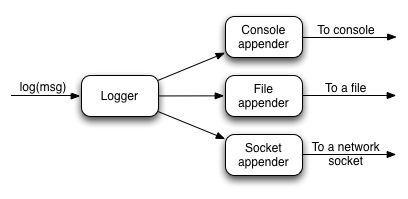

4 設定 - Reference Documentation
Authors: Graeme Rocher, Peter Ledbrook, Marc Palmer, Jeff Brown, Luke Daley, Burt Beckwith
Version: 2.3.0.BUILD-SNAPSHOT
Translated by: T.Yamamoto, Japanese Grails Doc Translating Team. Special thanks to NTT Software.
【注意】このドキュメントの内容はスナップショットバージョンを元に*意訳*されているため、一部現行バージョンでは未対応の機能もあります。
Table of Contents
4 設定
It may seem odd that in a framework that embraces "convention-over-configuration" that we tackle this topic now. With Grails' default settings you can actually develop an application without doing any configuration whatsoever, as the quick start demonstrates, but it's important to learn where and how to override the conventions when you need to. Later sections of the user guide will mention what configuration settings you can use, but not how to set them. The assumption is that you have at least read the first section of this chapter!
設定より規約(convention-over-configuration)を採用したフレームワークにおいて設定の説明をするのは、なんだかおかしく思えるかもしれません。
クイックスタートにあるように、Grailsのデフォルト設定を使用すると、実際には一切設定をすることなくアプリケーション開発を始めることができますが、必要な時に規約をどこでどのようにオーバーライドするのか学んでおくことは重要です。
これ以降のセクションでは、どんな設定が利用できるかについては言及しますが、どのように設定するかは言及しません。
というのは、少なくともこの章の最初のセクションは読むだろうと仮定しているからです！
4.1 基本設定
For general configuration Grails provides two files:
Grailsでは一般的な設定を行うために2つのファイルを提供しています:
grails-app/conf/BuildConfig.groovygrails-app/conf/Config.groovy
Both of them use Groovy's ConfigSlurper syntax. The first,
両方ともGroovyのConfigSlurperの構文を使用しています。
1つめのBuildConfig.groovy, is for settings that are used when running Grails commands, such as compile, doc, etc. The second file, Config.groovy, is for settings that are used when your application is running. This means that Config.groovy is packaged with your application, but BuildConfig.groovy is not. Don't worry if you're not clear on the distinction: the guide will tell you which file to put a particular setting in.
BuildConfig.groovyはcompileやdoc等のようなGrailsコマンドを実行するときに使われる設定です。
2つめのConfig.groovyはアプリケーションを実行するときに使われる設定です。
つまり、Config.groovyはアプリケーションにパッケージされますが、BuildConfig.groovyはされません。
違いがよく分からなくても心配する必要はありません。
どの設定をどのファイルに書くべきかはこのガイドで示していきます。
The most basic syntax is similar to that of Java properties files with dot notation on the left-hand side:
左辺にJavaのプロパティファイルのような、ドット区切りの文があるものが最も基本的な構文となります:foo.bar.hello = "world"
Note that the value is a Groovy string literal! Those quotes around 'world' are important. In fact, this highlights one of the advantages of the ConfigSlurper syntax over properties files: the property values can be any valid Groovy type, such as strings, integers, or arbitrary objects!
この値がGroovyの文字列リテラルであることに注意してください！
'world'を囲んでいる引用符が重要です。
実際に、これがプロパティファイルに対するConfigSlurperのシンタックスの有利な点の1つを際立たせています。
プロパティの値は文字列や整数、任意のオブジェクトのような、Groovyとして有効な型を取ることができるのです！
Things become more interesting when you have multiple settings with the same base. For example, you could have the two settings
同じベースで複数の設定をすると、もっとおもしろいことになります。
例えば、2つの設定を持つことができます。foo.bar.hello = "world" foo.bar.good = "bye"
both of which have the same base:
両方ともfoo.bar. The above syntax works but it's quite repetitive and verbose. You can remove some of that verbosity by nesting properties at the dots:
foo.barという同じベースを持っています。
上記の構文は動作しますが、繰り返しがかなり冗長です。
プロパティのドットの箇所でネストして、冗長さを無くすことができます:foo {
bar {
hello = "world"
good = "bye"
}
}
or by only partially nesting them:
または、それらを一部だけネストできます:foo {
bar.hello = "world"
bar.good = "bye"
}
However, you can't nest after using the dot notation. In other words, this won't work:
しかしながら、ドット区切りの後にネストを使うことはできません。
つまり、これは動作しません:// Won't work!
foo.bar {
hello = "world"
good = "bye"
}
Within both
BuildConfig.groovy and Config.groovy you can access several implicit variables from configuration values:
BuildConfig.groovyとConfig.groovy内では、設定値からいくつかの暗黙の変数にアクセスできます:| Variable | Description |
|---|---|
| userHome | Location of the home directory for the account that is running the Grails application. |
| grailsHome | Location of the directory where you installed Grails. If the GRAILS_HOME environment variable is set, it is used. |
| appName | The application name as it appears in application.properties. |
| appVersion | The application version as it appears in application.properties. |
| 変数 | 説明 |
|---|---|
| userHome | Grailsアプリケーションを実行しているアカウントのホームディレクトリの場所です。 |
| grailsHome | Grailsがインストールされているディレクトリの場所です。環境変数GRAILS_HOMEが設定されているときはその値が格納されます。 |
| appName | application.properties内に表記しているアプリケーション名です。 |
| appVersion | application.properties内に表記しているアプリケーションバージョンです。 |
For example:
例:my.tmp.dir = "${userHome}/.grails/tmp"
In addition,
加えて、BuildConfig.groovy has
BuildConfig.groovyは以下の変数を持っています。| Variable | Description |
|---|---|
| grailsVersion | The version of Grails used to build the project. |
| grailsSettings | An object containing various build related settings, such as baseDir. It's of type BuildSettings. |
| 変数 | 説明 |
|---|---|
| grailsVersion | プロジェクトをビルドするために使われたGrailsのバージョンです。 |
| grailsSettings | baseDirのような、ビルドに関連する様々な設定を格納したオブジェクトです。型はBuildSettingsです。 |
and
また、Config.groovy has
Config.groovyは以下の変数を持っています。| Variable | Description |
|---|---|
| grailsApplication | The GrailsApplication instance. |
| 変数 | 説明 |
|---|---|
| grailsApplication | GrailsApplicationのインスタンスです。 |
Those are the basics of adding settings to the configuration file, but how do you access those settings from your own application? That depends on which config you want to read.
ここまでは設定ファイルに設定を追加するための基本についてでしたが、アプリケーション自身からどのようにそれらの設定にアクセスするのでしょうか？
それはどの設定を読みたいかによります。
The settings in
BuildConfig.groovy are only available from command scripts and can be accessed via the grailsSettings.config property like so:
BuildConfig.groovy内の設定はコマンドスクリプトからしか取得できません。
以下のようにgrailsSettings.configプロパティを経由してアクセスできます:target(default: "Example command") { def maxIterations = grailsSettings.config.myapp.iterations.max … }
If you want to read runtime configuration settings, i.e. those defined in
実行時の設定、すなわちConfig.groovy, use the grailsApplication object, which is available as a variable in controllers and tag libraries:
Config.groovyに定義されたものを読みたい場合は、grailsApplicationオブジェクトを使って、コントローラやタグライブラリから変数として取得できます:class MyController {
def hello() {
def recipient = grailsApplication.config.foo.bar.hello render "Hello ${recipient}"
}
}
and can be easily injected into services and other Grails artifacts:
また、サービスやその他のGrailsアーティファクトへ簡単に注入することができます:class MyService {
def grailsApplication String greeting() {
def recipient = grailsApplication.config.foo.bar.hello
return "Hello ${recipient}"
}
}
As you can see, when accessing configuration settings you use the same dot notation as when you define them.
ご覧の通り、設定を取得するときは、それらを定義したときと同じようにドット区切り表記を用います。
4.1.1 組込オプション
Grails has a set of core settings that are worth knowing about. Their defaults are suitable for most projects, but it's important to understand what they do because you may need one or more of them later.
Grailsには知っておくべき基本設定の一式があります。
それらのデフォルトは多くのプロジェクトに適していますが、後で設定が必要になった時のために、それが何の設定であるか理解しておくことが重要です。Build settings
ビルド設定
Let's start with some important build settings. Although Grails requires JDK 6 when developing your applications, it is possible to deploy those applications to JDK 5 containers. Simply set the following in
いくつかの重要なビルド設定から始めましょう。
アプリケーションを開発するとき、GrailsはJDK 6を必要としますが、それらのアプリケーションをJDK 5で動作しているコンテナへデプロイすることが可能です。
単純にBuildConfig.groovy:
BuildConfig.groovy内で次のように設定します:grails.project.source.level = "1.5" grails.project.target.level = "1.5"
Note that source and target levels are different to the standard public version of JDKs, so JDK 5 -> 1.5, JDK 6 -> 1.6, and JDK 7 -> 1.7.
ただし、ソースとターゲットレベルはJDKの標準公開バージョンと異なり、JDK 5は1.5、JDK 6は1.6、そしてJDK 7は1.7となるようにしてください。
In addition, Grails supports Servlet versions 2.5 and above but defaults to 2.5. If you wish to use newer features of the Servlet API (such as 3.0 async support) you should configure the
加えて、Grailsはサーブレットバージョン2.5以上をサポートし、デフォルトは2.5です。
もし(3.0の非同期サポートのような)サーブレットAPIの新しい機能を使いたければ、grails.servlet.version setting appropriately:
grails.servlet.versionを適切に設定します:grails.servlet.version = "3.0"Runtime settings
ランタイム設定
On the runtime front, i.e.
ランタイムフロント、すなわちConfig.groovy, there are quite a few more core settings:
Config.groovyには非常に多くのコアな設定があります:grails.config.locations- The location of properties files or addition Grails Config files that should be merged with main configuration. See the section on externalised config.grails.enable.native2ascii- Set this to false if you do not require native2ascii conversion of Grails i18n properties files (default: true).grails.views.default.codec- Sets the default encoding regime for GSPs - can be one of 'none', 'html', or 'base64' (default: 'none'). To reduce risk of XSS attacks, set this to 'html'.grails.views.gsp.encoding- The file encoding used for GSP source files (default: 'utf-8').grails.mime.file.extensions- Whether to use the file extension to dictate the mime type in Content Negotiation (default: true).grails.mime.types- A map of supported mime types used for Content Negotiation.grails.serverURL- A string specifying the server URL portion of absolute links, including server name e.g. grails.serverURL="http://my.yourportal.com". See createLink. Also used by redirects.grails.views.gsp.sitemesh.preprocess- Determines whether SiteMesh preprocessing happens. Disabling this slows down page rendering, but if you need SiteMesh to parse the generated HTML from a GSP view then disabling it is the right option. Don't worry if you don't understand this advanced property: leave it set to true.grails.reload.excludesandgrails.reload.includes- Configuring these directives determines the reload behavior for project specific source files. Each directive takes a list of strings that are the class names for project source files that should be excluded from reloading behavior or included accordingly when running the application in development with therun-appcommand. If thegrails.reload.includesdirective is configured, then only the classes in that list will be reloaded.
grails.config.locations- メイン設定にマージされるべきプロパティファイルや追加のGrails設定ファイルの場所です。設定の外部化セクションを参照してください。grails.enable.native2ascii- Grailsのi18nプロパティファイルのnative2ascii変換が必要ない場合はこれをfalseに設定します(デフォルト: true)。grails.views.default.codec- GSPのデフォルトエンコーディング形式を設定します。'none'、'html'、または'base64'のいずれかを設定できます(デフォルト: none)。XSS攻撃によるリスクを減らすためには、これを'html'に設定します。grails.views.gsp.encoding- GSPのソースファイルに使用するファイルエンコーディングです(デフォルト: 'utf-8')。grails.mime.file.extensions- コンテントネゴシエーションにおいてmime typeの判定にファイルの拡張子を使うかどうかです。(デフォルト: true)grails.mime.types- コンテントネゴシエーションで使う、サポートするMIMEタイプのマップです。grails.serverURL- 絶対リンクのサーバURLの部分を指定する文字列です。grails.serverURL="http://my.yourportal.com"のようにサーバ名を含みます。createLinkを参照してください。この設定はリダイレクトにも使われます。grails.views.gsp.sitemesh.preprocess- SiteMeshプリプロセッシングさせるかどうかを決めます。これを無効にするとページのレンダリングが遅くなりますが、GSPビューから生成されたHTMLをパースするためにSiteMeshが必要であれば、無効にすることは正しい選択です。この上級者向けのプロパティを理解していなくても気にする必要はありません。trueのままにしておきましょう。grails.reload.excludesとgrails.reload.includes- このディレクティブの設定は、プロジェクト固有のソースファイルに対するリロードの挙動を決めます。それぞれのディレクティブは文字列のリストを取ります。この文字列はrun-appコマンドを使って開発時にアプリケーションを動作させる際、リロード対象から除外または含めるべきプロジェクトのソースファイルのクラス名です。grails.reload.includesディレクティブが設定されている場合、リストにあるクラスだけがリロードされます。
War generation
Warの生成
grails.project.war.file- Sets the name and location of the WAR file generated by the war commandgrails.war.dependencies- A closure containing Ant builder syntax or a list of JAR filenames. Lets you customise what libaries are included in the WAR file.grails.war.copyToWebApp- A closure containing Ant builder syntax that is legal inside an Ant copy, for example "fileset()". Lets you control what gets included in the WAR file from the "web-app" directory.grails.war.resources- A closure containing Ant builder syntax. Allows the application to do any other work before building the final WAR file
grails.project.war.file- warコマンドによって生成されるWARファイルの名前と場所を設定します。grails.war.dependencies- Antビルダシンタックスを含むクロージャ、またはJARファイル名のリストです。WARファイルに含まれるライブラリをカスタマイズできます。grails.war.copyToWebApp- "fileset()"等のAntコピーで定義されているAntビルダシンタックスを含むクロージャです。WARファイルに含めるために、"web-app"ディレクトリから何を取得するかを制御できます。grails.war.resources- Antビルダシンタックスを含むクロージャです。最終的にWARファイルをビルドする前に、その他の作業を行うことをアプリケーションに許可します。
For more information on using these options, see the section on deployment
これらのオプションの使用についての詳細は、デプロイセクションを参照してください。
4.1.2 ロギング
The Basics
基本
Grails uses its common configuration mechanism to provide the settings for the underlying Log4j log system, so all you have to do is add a
GrailsはGrails自身の共通設定の仕組みを使って、裏にあるLog4jログシステムの設定を提供しています。
なので、log4j setting to the file grails-app/conf/Config.groovy.
log4j設定をgrails-app/conf/Config.groovyファイルに追加するだけです。
So what does this
では、このlog4j setting look like? Here's a basic example:
log4jの設定はどのように見えるでしょうか？
基本的な例を示します:log4j = {
error 'org.codehaus.groovy.grails.web.servlet', // controllers
'org.codehaus.groovy.grails.web.pages' // GSP warn 'org.apache.catalina'
}
This says that for loggers whose name starts with 'org.codehaus.groovy.grails.web.servlet' or 'org.codehaus.groovy.grails.web.pages', only messages logged at 'error' level and above will be shown. Loggers with names starting with 'org.apache.catalina' logger only show messages at the 'warn' level and above. What does that mean? First of all, you have to understand how levels work.
このようにすると、名前が「org.codehaus.groovy.grails.web.servlet」または「org.codehaus.groovy.grails.web.pages」で始まるロガーについて、「error」レベル以上で記録されたメッセージのみが見えるようになります。
名前が「org.apache.catalina」で始まるロガーは「warn」レベル以上のメッセージのみが見えます。
どういう意味でしょうか？
まず、レベルがどのように動作するか理解しなければなりません。Logging levels
ログレベル
There are several standard logging levels, which are listed here in order of descending priority:
標準のロギングレベルにはいくつかの種類があり、優先順位の高い順に挙げます:
- off
- fatal
- error
- warn
- info
- debug
- trace
- all
When you log a message, you implicitly give that message a level. For example, the method
メッセージを記録する時、そのメッセージにレベルを暗黙的に与えています。
例えば、log.error(msg) will log a message at the 'error' level. Likewise, log.debug(msg) will log it at 'debug'. Each of the above levels apart from 'off' and 'all' have a corresponding log method of the same name.
log.error(msg)メソッドは「error」レベルでメッセージを記録します。
同様に、log.debug(msg)は「debug」で記録します。
「off」と「all」を除いた上記のレベルには、それぞれに対応する同名のログメソッドがあります。
The logging system uses that message level combined with the configuration for the logger (see next section) to determine whether the message gets written out. For example, if you have an 'org.example.domain' logger configured like so:
メッセージを出力するかどうかを決めるために、ログシステムはロガー(次のセクションを参照)の設定と併せて メッセージ レベルを使います。
例えば、「org.example.domain」ロガーはこのように設定されます:warn 'org.example.domain'
then messages with a level of 'warn', 'error', or 'fatal' will be written out. Messages at other levels will be ignored.
そうすると、「warn」または「error」、「fatal」レベルのメッセージが出力されるようになります。
その他のレベルのメッセージは無視されます。
Before we go on to loggers, a quick note about those 'off' and 'all' levels. These are special in that they can only be used in the configuration; you can't log messages at these levels. So if you configure a logger with a level of 'off', then no messages will be written out. A level of 'all' means that you will see all messages. Simple.
ロガーに進む前に、「off」と「all」レベルについて簡単に説明します。
これらは設定の中でだけ使うことができ、これらのレベルでメッセージを記録することはできません。
そして、「off」レベルにロガーを設定すると、メッセージが全く出力されなくなります。
「all」レベルは全てのメッセージが見られるようになります。
単純ですね。Loggers
ロガー
Loggers are fundamental to the logging system, but they are a source of some confusion. For a start, what are they? Are they shared? How do you configure them?
ロガーはログシステムにとって必須ですが、混乱のもとです。
まず、ロガーとは何でしょうか？共有されるものでしょうか？どのように設定するのでしょうか？
A logger is the object you log messages to, so in the call
ロガーはメッセージを出力するオブジェクトで、log.debug(msg), log is a logger instance (of type Log). These loggers are cached and uniquely identified by name, so if two separate classes use loggers with the same name, those loggers are actually the same instance.
log.debug(msg)という呼び出しにおいては、logが(Log型の)ロガーインスタンスです。
これらのロガーはキャッシュされ、名前によって一意に識別されます。
2つの別々のクラスが同じ名前のロガーを使う場合、そのロガーは実際に同一のインスタンスとなります。
There are two main ways to get hold of a logger:
ロガーを取得するには2つの主な方法があります:- use the
loginstance injected into artifacts such as domain classes, controllers and services; - use the Commons Logging API directly.
- ドメインクラスやコントローラ、サービスのようなアーティファクトに注入される
logインスタンスを使う - Commons Logging APIを直接使う
If you use the dynamic
動的なlog property, then the name of the logger is 'grails.app.<type>.<className>', where type is the type of the artifact, for example 'controllers' or 'services', and className is the fully qualified name of the artifact. For example, if you have this service:
logプロパティを使う場合、ロガーの名前は「grails.app.<type>.<className>」になります。
このtypeはアーティファクトの種類で、例えば「controllers」や「services」が入ります。
そして、classNameにはそのアーティファクトの完全修飾名が入ります。
例えば、このサービスの場合:package org.exampleclass MyService {
…
}
then the name of the logger will be 'grails.app.services.org.example.MyService'.
ロガーの名前は「grails.app.services.org.example.MyService」となります。
For other classes, the typical approach is to store a logger based on the class name in a constant static field:
他のクラスでは、定数フィールドにクラス名をベースとしたロガーを格納するのが典型的な方法です:package org.otherimport org.apache.commons.logging.LogFactoryclass MyClass { private static final log = LogFactory.getLog(this) … }
This will create a logger with the name 'org.other.MyClass' - note the lack of a 'grails.app.' prefix since the class isn't an artifact. You can also pass a name to the
これは「org.other.MyClass」という名前のロガーが生成されます。
アーティファクトではないクラスには「grails.app.」という接頭辞が付かないことに注意してください。
『myLogger』のような名前をgetLog() method, such as "myLogger", but this is less common because the logging system treats names with dots ('.') in a special way.
getLog()メソッドに渡すこともできます。
しかし、ロギングシステムがドット(.)付きの名前を特別な方法で扱うため、これはあまり一般的ではありません。Configuring loggers
You have already seen how to configure loggers in Grails:
Grailsでロガーをどのように設定するか既に見たことがあるはずです:log4j = {
error 'org.codehaus.groovy.grails.web.servlet'
}
This example configures loggers with names starting with 'org.codehaus.groovy.grails.web.servlet' to ignore any messages sent to them at a level of 'warn' or lower. But is there a logger with this name in the application? No. So why have a configuration for it? Because the above rule applies to any logger whose name begins with 'org.codehaus.groovy.grails.web.servlet.' as well. For example, the rule applies to both the
この例では、「org.codehaus.groovy.grails.web.servlet」で始まる名前のロガーに送られてくる、「warn」レベル以下のメッセージは無視するように設定しています。
しかし、アプリケーション上にこの名前のロガーは存在しているのでしょうか？答えはNoです。
ではなぜこんな設定をしているのでしょうか？
上記のルールは、「org.codehaus.groovy.grails.web.servlet.」で 始まる 名前のすべてのロガーにも適用されるからです。
例えば、このルールはorg.codehaus.groovy.grails.web.servlet.GrailsDispatcherServlet class and the org.codehaus.groovy.grails.web.servlet.mvc.GrailsWebRequest one.
org.codehaus.groovy.grails.web.servlet.GrailsDispatcherServletクラスとorg.codehaus.groovy.grails.web.servlet.mvc.GrailsWebRequestクラスの両方に適用されます。
In other words, loggers are hierarchical. This makes configuring them by package much simpler than it would otherwise be.
言い換えると、ロガーは階層的です。
これはパッケージ毎に設定することを、他の設定に比べて非常にシンプルにします。
The most common things that you will want to capture log output from are your controllers, services, and other artifacts. Use the convention mentioned earlier to do that: grails.app.<artifactType>.<className> . In particular the class name must be fully qualifed, i.e. with the package if there is one:
最も多いケースとして、ログ出力を取得したくなるのはコントローラやサービス、その他のアーティファクトです。
先述した「grails.app.<artifactType>.<className>」の規約を使いましょう。
特に、クラス名は完全修飾名にしなければなりません。
すなわち、パッケージが存在していれば含めるようにします:log4j = {
// Set level for all application artifacts
info "grails.app" // Set for a specific controller in the default package
debug "grails.app.controllers.YourController" // Set for a specific domain class
debug "grails.app.domain.org.example.Book" // Set for all taglibs
info "grails.app.taglib"
}
The standard artifact names used in the logging configuration are:
ロギング設定に使われる標準のアーティファクト名です:conf- For anything undergrails-app/confsuch asBootStrap.groovy(but excluding filters)filters- For filterstaglib- For tag librariesservices- For service classescontrollers- For controllersdomain- For domain entities
conf-BootStrap.groovyのようなgrails-app/conf配下にあるもの (フィルタは除く)filters- フィルタtaglib- タグライブラリservices- サービスクラスcontrollers- コントローラdomain- ドメインエンティティ
Grails itself generates plenty of logging information and it can sometimes be helpful to see that. Here are some useful loggers from Grails internals that you can use, especially when tracking down problems with your application:
Grails自身がたくさんのロギング情報を生成しており、ときどき役立つことがあります。
特にアプリケーションの問題を追跡するときに利用可能な、Grails内部の便利なロガーを示します:org.codehaus.groovy.grails.commons- Core artifact information such as class loading etc.org.codehaus.groovy.grails.web- Grails web request processingorg.codehaus.groovy.grails.web.mapping- URL mapping debuggingorg.codehaus.groovy.grails.plugins- Log plugin activitygrails.spring- See what Spring beans Grails and plugins are definingorg.springframework- See what Spring is doingorg.hibernate- See what Hibernate is doing
org.codehaus.groovy.grails.commons- クラスローディング等のようなコアとなるアーティファクト情報org.codehaus.groovy.grails.web- GrailsのWebリクエスト処理org.codehaus.groovy.grails.web.mapping- URLマッピングのデバッグorg.codehaus.groovy.grails.plugins- プラグインの動作ログgrails.spring- GrailsとプラグインがどんなSpringビーンを定義しているかorg.springframework- Springが何をするのかorg.hibernate- Hibernateが何をするのか
So far, we've only looked at explicit configuration of loggers. But what about all those loggers that don't have an explicit configuration? Are they simply ignored? The answer lies with the root logger.
ここまで、明示的なロガー設定についてだけ見てきました。
しかし、明示的な設定を 持たない すべてのロガーについてはどうでしょうか？
単純に無視されるのでしょうか？
その答えはルートロガーにあります。The Root Logger
ルートロガー
All logger objects inherit their configuration from the root logger, so if no explicit configuration is provided for a given logger, then any messages that go to that logger are subject to the rules defined for the root logger. In other words, the root logger provides the default configuration for the logging system.
すべてのロガーオブジェクトは設定をルートロガーから継承しています。
よって、指定されたロガーに明示的な設定が与えられない場合、そのロガーへのメッセージはルートロガーで定義されたルールに従います。
言い換えると、ルートロガーはロギングシステムのデフォルト設定を提供します。
Grails automatically configures the root logger to only handle messages at 'error' level and above, and all the messages are directed to the console (stdout for those with a C background). You can customise this behaviour by specifying a 'root' section in your logging configuration like so:
Grailsは「error」レベル以上のメッセージだけを扱うように、ルートロガーを自動的に設定します。
そして、すべてのメッセージはコンソール(C言語的に言うと標準出力)に向けられます。
次のようにロギング設定に「root」セクションを定義することによって、挙動をカスタマイズできます:log4j = {
root {
info()
}
…
}
The above example configures the root logger to log messages at 'info' level and above to the default console appender. You can also configure the root logger to log to one or more named appenders (which we'll talk more about shortly):
上記の例は「info」レベル以上のメッセージをデフォルトのコンソールアペンダに記録するよう、ルートロガーを設定します。
1つ以上の名前の付いたアペンダに対してロギングするように、ルートロガーを設定することもできます。(アペンダについてはすぐ後で詳しく説明します):log4j = {
appenders {
file name:'file', file:'/var/logs/mylog.log'
}
root {
debug 'stdout', 'file'
}
}
In the above example, the root logger will log to two appenders - the default 'stdout' (console) appender and a custom 'file' appender.
上の例では、ルートロガーはデフォルトのstdout(コンソール)アペンダと自前のfileアペンダの2つに対してログ出力します。
For power users there is an alternative syntax for configuring the root logger: the root
パワーユーザ向けに、ルートロガーを設定するための別の構文があります。
log4jクロージャの引数としてルートorg.apache.log4j.Logger instance is passed as an argument to the log4j closure. This lets you work with the logger directly:
org.apache.log4j.Loggerインスタンスが渡されます。
これでロガーを直接操作できます:log4j = { root ->
root.level = org.apache.log4j.Level.DEBUG
…
}
For more information on what you can do with this
このLogger instance, refer to the Log4j API documentation.
Loggerインスタンスでできることについての詳細は、Log4jのAPIドキュメントを参照してください。
Those are the basics of logging pretty well covered and they are sufficient if you're happy to only send log messages to the console. But what if you want to send them to a file? How do you make sure that messages from a particular logger go to a file but not the console? These questions and more will be answered as we look into appenders.
ここまででロギングの基本をほぼカバーしています。
ログメッセージをコンソールに出力するだけでよいのであれば、これで十分でしょう。
しかし、ファイルに送りたい場合はどうでしょうか？
どのようにして、特定のロガーからのメッセージをコンソールではなくファイルに対して送るように設定するのでしょうか？
これらの疑問、またはそれ以上についても、アペンダを調べることで、答えが得られるでしょう。Appenders
アペンダ
Loggers are a useful mechanism for filtering messages, but they don't physically write the messages anywhere. That's the job of the appender, of which there are various types. For example, there is the default one that writes messages to the console, another that writes them to a file, and several others. You can even create your own appender implementations!
ロガーはメッセージをフィルタリングするために役立つ仕組みです。
しかし、どこにもメッセージを物理的に出力できません。
それはアペンダの役割であり、アペンダには様々な種類があります。
例えば、メッセージをコンソールに出力するデフォルトアペンダや、ファイルに出力するアペンダなど色々あります。
自分でアペンダを実装することすらできます！
This diagram shows how they fit into the logging pipeline:
この図は、アペンダがどのようにロギングの流れに関わっているかを示しています:
As you can see, a single logger may have several appenders attached to it. In a standard Grails configuration, the console appender named 'stdout' is attached to all loggers through the default root logger configuration. But that's the only one. Adding more appenders can be done within an 'appenders' block:
見ての通り、1つのロガーに色々なアペンダが繋がっています。
Grailsの標準の設定では、stdoutという名前のコンソールアペンダが、ルートロガーの設定を通じて全てのロガーに繋がっています。
しかし、それ以外のアペンダはありません。
appendersブロックで、さらにアペンダを追加することができます:log4j = {
appenders {
rollingFile name: "myAppender",
maxFileSize: 1024,
file: "/tmp/logs/myApp.log"
}
}
The following appenders are available by default:
次のアペンダはデフォルトで利用できます:| Name | Class | Description |
|---|---|---|
| jdbc | JDBCAppender | Logs to a JDBC connection. |
| console | ConsoleAppender | Logs to the console. |
| file | FileAppender | Logs to a single file. |
| rollingFile | RollingFileAppender | Logs to rolling files, for example a new file each day. |
| 名前 | クラス | 説明 |
|---|---|---|
| jdbc | JDBCAppender | JDBC接続に記録します。 |
| console | ConsoleAppender | コンソールに記録します。 |
| file | FileAppender | 単一ファイルに記録します。 |
| rollingFile | RollingFileAppender | ローテーションするファイルに記録します。例えば日次で新しいファイルにします。 |
Each named argument passed to an appender maps to a property of the underlying Appender implementation. So the previous example sets the
アペンダに渡されるそれぞれの名前付き引数は、Appender実装の下にあるプロパティに対応しています。
つまり、前の例はname, maxFileSize and file properties of the RollingFileAppender instance.
RollingFileAppenderのインスタンスのnameとmaxFileSize、fileプロパティを設定しています。
You can have as many appenders as you like - just make sure that they all have unique names. You can even have multiple instances of the same appender type, for example several file appenders that log to different files.
好きなだけ多くのアペンダを持つことができます。
ただし、アペンダはすべてユニークな名前になるようにしてください。
例えば、異なるファイルに出力する複数のファイルアペンダのように、同じアペンダ型の複数のインスタンスを持つこともできます。
If you prefer to create the appender programmatically or if you want to use an appender implementation that's not available in the above syntax, simply declare an
プログラム的にアペンダを生成したい場合や、上記の構文では利用できないアペンダの実装を使いたい場合は、必要なアペンダのインスタンスを指定してappender entry with an instance of the appender you want:
appenderエントリを単純に宣言してください。import org.apache.log4j.*log4j = { appenders { appender new RollingFileAppender( name: "myAppender", maxFileSize: 1024, file: "/tmp/logs/myApp.log") } }
This approach can be used to configure
このアプローチはJMSAppender, SocketAppender, SMTPAppender, and more.
JMSAppender、SocketAppender、SMTPAppenderなどを設定するために使われます。
Once you have declared your extra appenders, you can attach them to specific loggers by passing the name as a key to one of the log level methods from the previous section:
追加のアペンダを宣言した上で、前のセクションで紹介したログレベルのメソッドのひとつにキーとして名前を渡すことで、それを特定のロガーに対応づけることができます:error myAppender: "grails.app.controllers.BookController"
This will ensure that the 'grails.app.controllers.BookController' logger sends log messages to 'myAppender' as well as any appenders configured for the root logger. To add more than one appender to the logger, then add them to the same level declaration:
この設定は、grails.app.controllers.BookControllerのロガーが、ルートロガーによって設定されたアペンダだけでなく、myAppenderにもログメッセージを送るようにします。
1つ以上のアペンダをロガーに追加するには、同じレベルの宣言に追加します:error myAppender: "grails.app.controllers.BookController", myFileAppender: ["grails.app.controllers.BookController", "grails.app.services.BookService"], rollingFile: "grails.app.controllers.BookController"
The above example also shows how you can configure more than one logger at a time for a given appender (
上の例は、特定のアペンダ(myFileAppender) by using a list.
myFileAppender)に対して、リストを使ってどのように1つ以上のロガーを同時に設定するかについても示しています。
Be aware that you can only configure a single level for a logger, so if you tried this code:
ロガーにはひとつのレベルしか設定できないことに注意してください。
なので、次のコードを試すと:error myAppender: "grails.app.controllers.BookController" debug myFileAppender: "grails.app.controllers.BookController" fatal rollingFile: "grails.app.controllers.BookController"
you'd find that only 'fatal' level messages get logged for 'grails.app.controllers.BookController'. That's because the last level declared for a given logger wins. What you probably want to do is limit what level of messages an appender writes.
grails.app.controllers.BookControllerのために「fatal」レベルのメッセージだけを記録するというのがわかるでしょう。
特定のロガーに対して宣言した最後のレベルが勝つためです。
おそらく行いたいことは、アペンダが書き込むメッセージのレベルを制限することです。
An appender that is attached to a logger configured with the 'all' level will generate a lot of logging information. That may be fine in a file, but it makes working at the console difficult. So we configure the console appender to only write out messages at 'info' level or above:
「all」レベルで設定されたロガーに繋がれたアペンダは、多くのロギング情報を生成するでしょう。
ファイルに出力する分には良いのですが、コンソール上での作業が難しくなってしまいます。
そのため、「info」レベル以上のメッセージだけ出力するようにコンソールアペンダを設定します:log4j = {
appenders {
console name: "stdout", threshold: org.apache.log4j.Level.INFO
}
}
The key here is the
ここでのポイントはthreshold argument which determines the cut-off for log messages. This argument is available for all appenders, but do note that you currently have to specify a Level instance - a string such as "info" will not work.
threshold引数でログメッセージを遮断するか決めることです。
この引数は全てのアペンダで利用可能ですが、Levelインスタンスを指定する必要があることに注意してください。
infoのような文字列では動作しません。Custom Layouts
カスタムレイアウト
By default the Log4j DSL assumes that you want to use a PatternLayout. However, there are other layouts available including:
デフォルトでLog4jのDSLは、PatternLayoutを使うことを前提としています。
しかし、以下のような他のレイアウトも利用可能です:xml- Create an XML log filehtml- Creates an HTML log filesimple- A simple textual logpattern- A Pattern layout
xml- XMLログファイルを作成html- HTMLログファイルを作成simple- シンプルなテキストログpattern- パターンレイアウト
You can specify custom patterns to an appender using the
layout setting:
layout設定を使ってアペンダに独自のパターンを指定できます:log4j = {
appenders {
console name: "customAppender",
layout: pattern(conversionPattern: "%c{2} %m%n")
}
}
This also works for the built-in appender "stdout", which logs to the console:
これはコンソール出力用のビルトインアペンダであるstdoutでも動作します。log4j = {
appenders {
console name: "stdout",
layout: pattern(conversionPattern: "%c{2} %m%n")
}
}Environment-specific configuration
環境ごとの設定
Since the logging configuration is inside
ロギングの設定はConfig.groovy, you can put it inside an environment-specific block. However, there is a problem with this approach: you have to provide the full logging configuration each time you define the log4j setting. In other words, you cannot selectively override parts of the configuration - it's all or nothing.
Config.groovy内にあるため、環境ごとのブロックの内側にその設定一式を記述できます。
しかし、この方法には問題があります。
環境ごとにlog4jの完全なロギング設定を記述しなければならないのです。
言い換えると、設定の特定の部分だけ都合良く上書きすることができません。
全部書くか、まったく書かないかのどちらかしかありません。
To get around this, the logging DSL provides its own environment blocks that you can put anywhere in the configuration:
これを回避するために、ロギングDSLは設定内のどこででも記述可能な独自の環境ブロックを提供しています:log4j = {
appenders {
console name: "stdout",
layout: pattern(conversionPattern: "%c{2} %m%n") environments {
production {
rollingFile name: "myAppender", maxFileSize: 1024,
file: "/tmp/logs/myApp.log"
}
}
} root {
//…
} // other shared config
info "grails.app.controller" environments {
production {
// Override previous setting for 'grails.app.controller'
error "grails.app.controllers"
}
}
}
The one place you can't put an environment block is inside the
唯一root definition, but you can put the root definition inside an environment block.
root定義 内 では環境ブロックが使用できませんが、代わりに環境ブロック内へroot定義を配置してください。Full stacktraces
完全なスタックトレース
When exceptions occur, there can be an awful lot of noise in the stacktrace from Java and Groovy internals. Grails filters these typically irrelevant details and restricts traces to non-core Grails/Groovy class packages.
例外が発生した場合、スタックトレース内にはJavaとGroovy内部から恐しいほどたくさんのノイズが発生しています。
Grailsはそれら一般的に重要でない詳細なスタックトレースをフィルタし、主要なGrails/Groovyクラスのパッケージでないスタックトレースを制限します。
When this happens, the full trace is always logged to the
この時、フルスタックトレースは常にStackTrace logger, which by default writes its output to a file called stacktrace.log. As with other loggers though, you can change its behaviour in the configuration. For example if you prefer full stack traces to go to the console, add this entry:
StackTraceロガーへ出力されます。
デフォルトはstacktrace.logと呼ばれるファイルへの出力です。
他のロガーと同じように、設定でこの振る舞いを変更できます。
例えば、フルスタックトレースをコンソールに出力したい場合、次の設定を追加します:error stdout: "StackTrace"
This won't stop Grails from attempting to create the stacktrace.log file - it just redirects where stack traces are written to. An alternative approach is to change the location of the 'stacktrace' appender's file:
これによって、Grailsがstacktrace.logファイルを作成しなくなるわけではありません。
単にスタックトレースが書かれるべき場所を変更するだけです。
別の方法はstacktraceアペンダのファイル場所を変更することです:log4j = {
appenders {
rollingFile name: "stacktrace", maxFileSize: 1024,
file: "/var/tmp/logs/myApp-stacktrace.log"
}
}
or, if you don't want to the 'stacktrace' appender at all, configure it as a 'null' appender:
または、stacktraceアペンダがまったく必要なければ、nullアペンダとして設定します:log4j = {
appenders {
'null' name: "stacktrace"
}
}
You can of course combine this with attaching the 'stdout' appender to the 'StackTrace' logger if you want all the output in the console.
もちろんすべてをコンソール上にだけ出力したければ、StackTraceロガーのstdoutアペンダへの接続と、このnullアペンダの設定を組み合わせることができます。
Finally, you can completely disable stacktrace filtering by setting the
最後に、VMプロパティでgrails.full.stacktrace VM property to true:
grails.full.stacktraceをtrueに設定すると、スタックトレースフィルタを完全に無効にできます:grails -Dgrails.full.stacktrace=true run-appMasking Request Parameters From Stacktrace Logs
スタックトレースログからリクエストパラメータをマスクする
When Grails logs a stacktrace, the log message may include the names and values of all of the request parameters for the current request. To mask out the values of secure request parameters, specify the parameter names in the
Grailsでスタックトレースのログを出力する場合、ログメッセージには現在のリクエストに対するリクエストパラメータのすべての名前と値が含まれるかもしれません。
セキュアなリクエストパラメータの値をマスクするには、grails.exceptionresolver.params.exclude config property:
grails.exceptionresolver.params.excludeの設定値にパラメータ名を指定します。grails.exceptionresolver.params.exclude = ['password', 'creditCard']
Request parameter logging may be turned off altogether by setting the
grails.exceptionresolver.logRequestParameters config property to false. The default value is true when the application is running in DEVELOPMENT mode and false for all other modes.
grails.exceptionresolver.logRequestParametersの設定値にfalseを設定すると、リクエストパラメータのロギングが完全に停止します。
デフォルト値は、DEVELOPMENTモードでアプリケーションを起動している場合はtrue、それ以外のモードではfalseになります。grails.exceptionresolver.logRequestParameters=falseLogger inheritance
ロガーの継承
Earlier, we mentioned that all loggers inherit from the root logger and that loggers are hierarchical based on '.'-separated terms. What this means is that unless you override a parent setting, a logger retains the level and the appenders configured for that parent. So with this configuration:
以前に、全てのロガーはルートロガーを継承し、そしてロガーは「.」を区切りとした階層構造を持っていることを説明しました。
これは親の設定を上書きする場合を除き、ロガーは親のログレベルとアペンダの設定を保持することを意味します。
次の設定では:log4j = {
appenders {
file name:'file', file:'/var/logs/mylog.log'
}
root {
debug 'stdout', 'file'
}
}
all loggers in the application will have a level of 'debug' and will log to both the 'stdout' and 'file' appenders. What if you only want to log to 'stdout' for a particular logger? Change the 'additivity' for a logger in that case.
アプリケーション内のすべてのロガーが「debug」レベルに設定され、そしてstdoutアペンダとfileアペンダの両方にログが出力されます。
もし特定のロガーに対してのみstdoutにログを出力したい場合はどうすればよいでしょう？このような場合は、ロガーに対してadditivityを変更してください。
Additivity simply determines whether a logger inherits the configuration from its parent. If additivity is false, then its not inherited. The default for all loggers is true, i.e. they inherit the configuration. So how do you change this setting? Here's an example:
この追加設定はロガーが親から設定を継承するかを決めます。
もしこの設定がfalseの場合、親から設定を継承しません。
すべてのロガーのデフォルトはtrueで親の設定を継承します。
この設定をどのように変更するのでしょうか？
以下に例を示します:log4j = {
appenders {
…
}
root {
…
} info additivity: false
stdout: ["grails.app.controllers.BookController",
"grails.app.services.BookService"]
}
So when you specify a log level, add an 'additivity' named argument. Note that you when you specify the additivity, you must configure the loggers for a named appender. The following syntax will not work:
このように、ログレベルを指定する際にadditivityという名前の引数を追加します。
additivityを指定するときは、名前付きのアペンダに対してロガーの設定をしなければなりません。
例えば以下の構文では正しく動作 しません :info additivity: false, ["grails.app.controllers.BookController", "grails.app.services.BookService"]
Customizing stack trace printing and filtering
スタックトレースの表示とフィルタリングをカスタマイズする
Stacktraces in general and those generated when using Groovy in particular are quite verbose and contain many stack frames that aren't interesting when diagnosing problems. So Grails uses a implementation of the
Groovyを個別で使用した場合に生成されるスタックトレースは、とても冗長で問題解析に関係のないたくさんのスタックフレームが含まれています。
Grailsは無関係なスタックフレームを取り除くためにorg.codehaus.groovy.grails.exceptions.StackTraceFilterer interface to filter out irrelevant stack frames. To customize the approach used for filtering, implement that interface in a class in src/groovy or src/java and register it in Config.groovy:
org.codehaus.groovy.grails.exceptions.StackTraceFiltererインタフェースの実装を使用しています。このフィルタリング方法をカスタマイズするには、src/groovyまたはsrc/javaにインタフェースの実装クラスを配置し、そのクラスをConfig.groovyで登録します:grails.logging.stackTraceFiltererClass =
'com.yourcompany.yourapp.MyStackTraceFilterer'
In addition, Grails customizes the display of the filtered stacktrace to make the information more readable. To customize this, implement the
さらに、Grailsはより情報が読みやすくなるようフィルタしたスタックトレースの表示を変更しています。
これをカスタマイズするには、org.codehaus.groovy.grails.exceptions.StackTracePrinter interface in a class in src/groovy or src/java and register it in Config.groovy:
src/groovyまたはsrc/javaにorg.codehaus.groovy.grails.exceptions.StackTracePrinterインタフェースの実装クラスを配置し、そのクラスをConfig.groovyで登録します:grails.logging.stackTracePrinterClass =
'com.yourcompany.yourapp.MyStackTracePrinter'
Finally, to render error information in the error GSP, an HTML-generating printer implementation is needed. The default implementation is
最後に、エラーGSP内にエラー情報をレンダリングするために、HTMLを生成し出力する実装が必要です。
デフォルト実装はorg.codehaus.groovy.grails.web.errors.ErrorsViewStackTracePrinter and it's registered as a Spring bean. To use your own implementation, either implement the org.codehaus.groovy.grails.exceptions.StackTraceFilterer directly or subclass ErrorsViewStackTracePrinter and register it in grails-app/conf/spring/resources.groovy as:
org.codehaus.groovy.grails.web.errors.ErrorsViewStackTracePrinterで、これはSpringビーンとして登録されています。
独自の実装を使うには、org.codehaus.groovy.grails.exceptions.StackTraceFiltererを直接実装するか、ErrorsViewStackTracePrinterのサブクラスとして実装し、grails-app/conf/spring/resources.groovyでそれを登録します:import com.yourcompany.yourapp.MyErrorsViewStackTracePrinterbeans = { errorsViewStackTracePrinter(MyErrorsViewStackTracePrinter,
ref('grailsResourceLocator'))
}Alternative logging libraries
ロギングライブラリの変更
By default, Grails uses Log4J to do its logging. For most people this is absolutely fine, and many users don't even care what logging library is used. But if you're not one of those and want to use an alternative, such as the JDK logging package or logback, you can do so by simply excluding a couple of dependencies from the global set and adding your own:
デフォルトでは、GrailsはロギングにLog4Jを使用します。
大抵のユーザにとってはLog4Jで十分で、ロギングライブラリに何が使われているかを気にしません。
しかし、もしそうではなくJDKのロギングパッケージやlogbackといった異なるロギングライブラリが使いたい場合、グローバルな設定からいくつかの依存関係を単に取り除き、必要な依存関係を追加します:grails.project.dependency.resolution = {
inherits("global") {
excludes "grails-plugin-logging", "log4j"
}
…
dependencies {
runtime "ch.qos.logback:logback-core:0.9.29"
…
}
…
}
If you do this, you will get unfiltered, standard Java stacktraces in your log files and you won't be able to use the logging configuration DSL that's just been described. Instead, you will have to use the standard configuration mechanism for the library you choose.
もしこの設定をした場合、ログファイル内ではフィルタされてない通常のJavaスタックトレースが出力され、そしてDSLで書かれたロギング設定が使用できなくなります。
代わりに、選択したライブラリで用意されている標準的な設定方法を使わなければなりません。
4.1.3 GORM
Grails provides the following GORM configuration options:
Grailsには、以下のようなGORMのオプション設定が用意されています。*
grails.gorm.failOnError - If set to true, causes the save() method on domain classes to throw a grails.validation.ValidationException if validation fails during a save. This option may also be assigned a list of Strings representing package names. If the value is a list of Strings then the failOnError behavior will only be applied to domain classes in those packages (including sub-packages). See the save method docs for more information.grails.gorm.failOnError=trueに設定すると、保存中にバリデーションが失敗した場合、ドメインクラスのsave()メソッドはgrails.validation.ValidationExceptionをスローするようになります。
For example, to enable failOnError for all domain classes:
たとえば、全てのドメインクラスでfailOnErrorを有効にするには:grails.gorm.failOnError=trueand to enable failOnError for domain classes by package:
また、パッケージごとにドメインクラスに対してfailOnErrorを有効にするには:grails.gorm.failOnError = ['com.companyname.somepackage',
'com.companyname.someotherpackage']*
grails.gorm.autoFlush = If set to true, causes the merge, save and delete methods to flush the session, replacing the need to explicitly flush using save(flush: true).grails.gorm.autoFlush=trueにセットすると、save(flush: true)を使用して明示的にフラッシュする必要がなくなり、merge、save、deleteメソッドはセッションをフラッシュするようになります。
4.2 環境
h4. Per Environment Configuration
環境ごとの設定
Grails supports the concept of per environment configuration. The
Grailsは環境ごとで設定値を変更する概念をサポートしています。Config.groovy, DataSource.groovy, and BootStrap.groovy files in the grails-app/conf directory can use per-environment configuration using the syntax provided by ConfigSlurper. As an example consider the following default DataSource definition provided by Grails:grails-app/confディレクトリ内のConfig.groovy, DataSource.groovy,BootStrap.groovyファイルはConfigSlurperによって提供される構文を使用して、環境ごとの設定を行うことができます。次の例では、Grailsによって与えられるデフォルトのDataSource定義について記述しています。dataSource {
pooled = false
driverClassName = "org.h2.Driver"
username = "sa"
password = ""
}
environments {
development {
dataSource {
dbCreate = "create-drop"
url = "jdbc:h2:mem:devDb"
}
}
test {
dataSource {
dbCreate = "update"
url = "jdbc:h2:mem:testDb"
}
}
production {
dataSource {
dbCreate = "update"
url = "jdbc:h2:prodDb"
}
}
}Notice how the common configuration is provided at the top level and then an
一般的な構成として、共通的な設定はトップレベルで提供され、environments block specifies per environment settings for the dbCreate and url properties of the DataSource.environmentsブロックにはDataSourceのdbCreateやurlプロパティを環境ごとに指定している様子がわかります。h4. Packaging and Running for Different Environments
異なる環境のパッケージングと実行
Grails' command line has built in capabilities to execute any command within the context of a specific environment. The format is:
Grailsのコマンドラインは、特定の環境下で、任意のコマンドを実行する機能が組み込まれています。そのフォーマットは以下となります。grails [environment] [command name]
In addition, there are 3 preset environments known to Grails:
加えて、Grailsではdev, prod, and test for development, production and test. For example to create a WAR for the test environment you wound run:dev,prod,test(development,production,test)といった、あらかじめ定義されている３つの環境が知られています。例えば、test環境でWARを作成するには、以下のように実行します。grails test war
To target other environments you can pass a
上記の３つ以外の環境をターゲットにするには、任意のコマンドにgrails.env variable to any command:grails.env変数を渡すことで実現できます。grails -Dgrails.env=UAT run-app
h4. Programmatic Environment Detection
プログラマチック環境検出
Within your code, such as in a Gant script or a bootstrap class you can detect the environment using the Environment class:
Gantスクリプトやbootstrapクラスのコード内ではEnvironmentクラスを使って、環境を検出できます。import grails.util.Environment...switch (Environment.current) { case Environment.DEVELOPMENT: configureForDevelopment() break case Environment.PRODUCTION: configureForProduction() break }
h4. Per Environment Bootstrapping
環境ごとのブートストラップ
It's often desirable to run code when your application starts up on a per-environment basis. To do so you can use the
アプリケーションの起動時に、環境に基づいたコードを実行することが望ましい場合があります。そのためには、grails-app/conf/BootStrap.groovy file's support for per-environment execution:grails-app/conf/BootStrap.groovyファイルの環境ごとの実行サポートを使います。def init = { ServletContext ctx ->
environments {
production {
ctx.setAttribute("env", "prod")
}
development {
ctx.setAttribute("env", "dev")
}
}
ctx.setAttribute("foo", "bar")
}h4. Generic Per Environment Execution
ジェネリックな環境の実行The previous
以前のBootStrap example uses the grails.util.Environment class internally to execute. You can also use this class yourself to execute your own environment specific logic:BootStrapの例では、内部的にgrails.util.Environmentクラスを使用して実行しています。独自の環境ロジックを実行するために、このクラスを以下のように使うこともできます。Environment.executeForCurrentEnvironment {
production {
// do something in production
}
development {
// do something only in development
}
}4.3 データソース
Since Grails is built on Java technology setting up a data source requires some knowledge of JDBC (the technology that doesn't stand for Java Database Connectivity).
Grailsはデータソースの設定がJava技術で構築されているため、ある程度JDBC（Java DataBase Connectivityの略ではない）の知識が必要になります。
If you use a database other than H2 you need a JDBC driver. For example for MySQL you would need Connector/J
もしH2以外のデータベースを使うなら、JDBCドライバが必要になります。例えばMySQLであればConnector/J が必要になります。Drivers typically come in the form of a JAR archive. It's best to use Ivy to resolve the jar if it's available in a Maven repository, for example you could add a dependency for the MySQL driver like this:
ドライバは、一般的にはJAR形式で提供されています。もしIvyが使える場合は、Mavenリポジトリからjarを取得するのがよいでしょう。例えば、このようにMySQLの依存関係を加えることができます。grails.project.dependency.resolution = {
inherits("global")
log "warn"
repositories {
grailsPlugins()
grailsHome()
grailsCentral()
mavenCentral()
}
dependencies {
runtime 'mysql:mysql-connector-java:5.1.16'
}
}Note that the built-in
mavenCentral() repository is included here since that's a reliable location for this library.mavenCentral()リポジトリが記述されているのは、このライブラリの取得元として信頼できる場所だからです。If you can't use Ivy then just put the JAR in your project's
Ivyが使えない場合は、プロジェクトのlib directory.libディレクトリにJARを置いてください。Once you have the JAR resolved you need to get familiar Grails' DataSource descriptor file located at
JARが解決できたら、grails-app/conf/DataSource.groovy. This file contains the dataSource definition which includes the following settings:grails-app/conf/DataSource.groovyファイルで使用する、Grailsにおけるデータソースの定義方法を覚える必要があります。このファイルはデータソースの定義として、以下の項目を含んでいます。*
driverClassName - The class name of the JDBC driver
username- The username used to establish a JDBC connectionpassword- The password used to establish a JDBC connectionurl- The JDBC URL of the databasedbCreate- Whether to auto-generate the database from the domain model - one of 'create-drop', 'create', 'update' or 'validate'pooled- Whether to use a pool of connections (defaults to true)logSql- Enable SQL logging to stdoutformatSql- Format logged SQLdialect- A String or Class that represents the Hibernate dialect used to communicate with the database. See the org.hibernate.dialect package for available dialects.readOnly- Iftruemakes the DataSource read-only, which results in the connection pool callingsetReadOnly(true)on eachConnectionpersistenceInterceptor- The default datasource is automatically wired up to the persistence interceptor, other datasources are not wired up automatically unless this is set totrueproperties- Extra properties to set on the DataSource bean. See the Commons DBCP BasicDataSource documentation.
driverClassName - JDBCドライバのクラス名username - JDBCコネクションの接続に使用するユーザ名password - JDBCコネクションの接続に使用するパスワードurl - データベースのJDBC URLdbCreate - ドメインモデルからデータベースを自動で生成するか。'create-drop'、'create'、'update'、もしくは'validate'の中から1つ指定pooled - コネクションプールを使うか（デフォルトではtrue)logSql - 標準出力へのSQLロギングを有効にするかformatSql - SQLログをフォーマットするかdialect - データベースの通信に使用されるHibernateの方言を表す文字型かクラス。利用できる方言はorg.hibernate.dialectパッケージを参照readOnly - trueにした場合は読み取り専用のデータソースとなり、各ConnectionでsetReadOnly(true)がコネクションプールより呼ばれるpersistenceInterceptor - The default datasource is automatically wired up to the persistence interceptor, other datasources are not wired up automatically unless this is set to trueproperties - DataSourceビーンを設定するための追加プロパティ。Commons DBCP BasicDataSourceドキュメント参照A typical configuration for MySQL may be something like:
MySQLの一般的な構成はおおむね以下のようになります。dataSource {
pooled = true
dbCreate = "update"
url = "jdbc:mysql://localhost/yourDB"
driverClassName = "com.mysql.jdbc.Driver"
dialect = org.hibernate.dialect.MySQL5InnoDBDialect
username = "yourUser"
password = "yourPassword"
}When configuring the DataSource do not include the type or the def keyword before any of the configuration settings as Groovy will treat these as local variable definitions and they will not be processed. For example the following is invalid:
dataSource {
boolean pooled = true // type declaration results in ignored local variable
…
}Example of advanced configuration using extra properties:
追加プロパティを使い、高度な設定を行う例は以下になります。
dataSource {
pooled = true
dbCreate = "update"
url = "jdbc:mysql://localhost/yourDB"
driverClassName = "com.mysql.jdbc.Driver"
dialect = org.hibernate.dialect.MySQL5InnoDBDialect
username = "yourUser"
password = "yourPassword"
properties {
maxActive = 50
maxIdle = 25
minIdle = 5
initialSize = 5
minEvictableIdleTimeMillis = 60000
timeBetweenEvictionRunsMillis = 60000
maxWait = 10000
validationQuery = "/* ping */"
}
}h4. More on dbCreate
dbCreateの詳細
Hibernate can automatically create the database tables required for your domain model. You have some control over when and how it does this through the
Hibernateは自動的にドメインモデルに必要なデータベーステーブルを作成することができます。ユーザはdbCreate property, which can take these values:dbCreateプロパティを使い、どのようにテーブルの作成を行うのかコントロールすることができ、以下のような値を取ることができます。 create* - Drops the existing schemaCreates the schema on startup, dropping existing tables, indexes, etc. first.
- create-drop - Same as create, but also drops the tables when the application shuts down cleanly.
- update - Creates missing tables and indexes, and updates the current schema without dropping any tables or data. Note that this can't properly handle many schema changes like column renames (you're left with the old column containing the existing data).
- validate - Makes no changes to your database. Compares the configuration with the existing database schema and reports warnings.
- any other value - does nothing
You can also remove the
dbCreate setting completely, which is recommended once your schema is relatively stable and definitely when your application and database are deployed in production. Database changes are then managed through proper migrations, either with SQL scripts or a migration tool like Liquibase (the Database Migration plugin uses Liquibase and is tightly integrated with Grails and GORM).dbCreate設定を完全に削除することもできます。それは、アプリケーションとデータベースが本番環境にデプロイされている場合、スキーマが比較的安定してきた段階で推奨されています。データベースの変更は、SQLスクリプトやLiquibaseのようなマイグレーションツールのどちらかで、適切にマイグレーションを管理してください。（Database Migration プラグインはLiquibaseを使用し、GrailsやGORMと統合されます。）
4.3.1 データソースと環境
The previous example configuration assumes you want the same config for all environments: production, test, development etc.
これまでの例ではすべての環境（production, test, developmentなど）で同じ設定を行うことを想定していました。Grails' DataSource definition is "environment aware", however, so you can do:
Grailsのデータソース定義では環境ごとの設定が可能になっています。dataSource {
pooled = true
driverClassName = "com.mysql.jdbc.Driver"
dialect = org.hibernate.dialect.MySQL5InnoDBDialect
// other common settings here
}environments {
production {
dataSource {
url = "jdbc:mysql://liveip.com/liveDb"
// other environment-specific settings here
}
}
}4.3.2 JNDI データソース
h4. Referring to a JNDI DataSource
JNDIデータソースの参照
Most Java EE containers supply
ほとんどのJavaEEコンテナはJava Naming and Directory Interface (JNDI)を通して、DataSource instances via Java Naming and Directory Interface (JNDI). Grails supports the definition of JNDI data sources as follows:DataSourceインスタンスを提供しています。Grailsでは次のようにJNDIデータソースの定義をサポートしています。dataSource {
jndiName = "java:comp/env/myDataSource"
}The format on the JNDI name may vary from container to container, but the way you define the
JNDI名のフォーマットはコンテナによって変化するかもしれませんが、GrailsでDataSource in Grails remains the same.DataSourceを定義する方法は変わらず同じです。h4. Configuring a Development time JNDI resource
開発時におけるJNDIリソースの設定
The way in which you configure JNDI data sources at development time is plugin dependent. Using the Tomcat plugin you can define JNDI resources using the
開発時におけるJNDIデータソースの設定方法はプラグインに依存しています。Tomcatプラグインを使う場合は、grails.naming.entries setting in grails-app/conf/Config.groovy:grails-app/conf/Config.groovy内のgrails.naming.entriesの設定を使用することで、JNDIリソースを定義します。grails.naming.entries = [
"bean/MyBeanFactory": [
auth: "Container",
type: "com.mycompany.MyBean",
factory: "org.apache.naming.factory.BeanFactory",
bar: "23"
],
"jdbc/EmployeeDB": [
type: "javax.sql.DataSource", //required
auth: "Container", // optional
description: "Data source for Foo", //optional
driverClassName: "org.h2.Driver",
url: "jdbc:h2:mem:database",
username: "dbusername",
password: "dbpassword",
maxActive: "8",
maxIdle: "4"
],
"mail/session": [
type: "javax.mail.Session,
auth: "Container",
"mail.smtp.host": "localhost"
]
]4.3.3 自動データベースマイグレーション
The
dbCreate property of the DataSource definition is important as it dictates what Grails should do at runtime with regards to automatically generating the database tables from GORM classes. The options are described in the DataSource section:DataSource定義のdbCreateプロパティは、Grailsが実行時にGORMのクラスから自動的にデータベーステーブルを生成すべきかを指示する重要なプロパティです。以下のオプションはDataSourceのセクションで説明しています。
createcreate-dropupdatevalidate- no value
In development mode
developmentモードでは、dbCreate is by default set to "create-drop", but at some point in development (and certainly once you go to production) you'll need to stop dropping and re-creating the database every time you start up your server.dbCreateはデフォルト値が"create-drop"で設定されていますが、開発中（もしくは本番以前）では、サーバの起動ごとにデータベースが削除、再作成されることが不都合な場合があります。It's tempting to switch to
コードを変更したときに、既存データを維持したままスキーマだけを更新するためupdate so you retain existing data and only update the schema when your code changes, but Hibernate's update support is very conservative. It won't make any changes that could result in data loss, and doesn't detect renamed columns or tables, so you'll be left with the old one and will also have the new one.updateに切り替えたくなりますが、Hibernateの更新サポートはあまりパッとしません。データの損失につながる可能性のある変更をすることはありませんが、テーブルやカラム名の変更を見つけることができないので、古いテーブルやカラムは残されて新しいものも持つことになります。Grails supports migrations via the Database Migration plugin which can be installed by declaring the plugin in
GrailsはDatabase Migration を介してマイグレーションをサポートしています。それはgrails-app/conf/BuildConfig.groovy:grails-app/conf/BuildConfig.groovyに宣言することでプラグインとしてインストールすることができます。:grails.project.dependency.resolution = {
…
plugins {
runtime ':database-migration:1.3.1'
}
}The plugin uses Liquibase and and provides access to all of its functionality, and also has support for GORM (for example generating a change set by comparing your domain classes to a database).
このプラグインはLiquibase を使用しており、Liquibaseすべての機能へのアクセスを提供しています。また、GORMのサポートも提供しています（例えばドメインクラスとデータベースを比較しチェンジセットを生成します）。
4.3.4 Transaction-awareデータソースプロキシ
The actual
実際のdataSource bean is wrapped in a transaction-aware proxy so you will be given the connection that's being used by the current transaction or Hibernate Session if one is active.dataSourceビーンはトランザクション対応のプロキシでラップされているため、それらが開始されているのであれば、現在のトランザクションやHibernateセッションで使われているコネクションが得られます。If this were not the case, then retrieving a connection from the
もしdataSource would be a new connection, and you wouldn't be able to see changes that haven't been committed yet (assuming you have a sensible transaction isolation setting, e.g. READ_COMMITTED or better).dataSourceとしてトランザクション対応のプロキシを使っていなかったとしたら、そのdataSourceから取得したコネクションは新規コネクションであり、(READ_COMMITTEDやより上位の適切なトランザクション分離が設定されていると仮定すれば)まだコミットされていない変更はみえないことでしょう。 The "real" unproxied
もしプロキシではない「素」のdataSource is still available to you if you need access to it; its bean name is dataSourceUnproxied.dataSourceにアクセスする必要があるなら、dataSourceUnproxiedというビーン名を使って利用できます。You can access this bean like any other Spring bean, i.e. using dependency injection:
他のSpringビーンのように依存性注入を利用するなどして、ビーンにアクセスできます。class MyService { def dataSourceUnproxied
…
}or by pulling it from the
またはApplicationContext:ApplicationContextから取得できます。def dataSourceUnproxied = ctx.dataSourceUnproxied
4.3.5 データベースコンソール
The H2 database console is a convenient feature of H2 that provides a web-based interface to any database that you have a JDBC driver for, and it's very useful to view the database you're developing against. It's especially useful when running against an in-memory database.
H2 database consoleはJDBCドライバを持つデータベースにWebベースのインタフェースを与えるH2の便利な機能であり、開発中のデータベースの表示に非常に便利です。インメモリデータベースに対して実行している場合には特に便利です。You can access the console by navigating to http://localhost:8080/appname/dbconsole in a browser. The URI can be configured using the
ブラウザでhttp://localhost:8080/appname/dbconsoleにアクセスすることで、コンソールを表示することが出来ます。そのURIは、Config.groovy内のgrails.dbconsole.urlRoot attribute in Config.groovy and defaults to '/dbconsole'.grails.dbconsole.urlRoot属性を使って設定することが可能で、デフォルト値は'/dbconsole'になっています。The console is enabled by default in development mode and can be disabled or enabled in other environments by using the
コンソールは開発環境ではデフォルトで有効になっていて、Config.groovy内のgrails.dbconsole.enabled attribute in Config.groovy. For example you could enable the console in production usinggrails.dbconsole.enabled属性を使って無効にしたり、他のモードで有効にすることができます。例えば、本番環境(production)でコンソールを有効にするには、次のように記述します。environments {
production {
grails.serverURL = "http://www.changeme.com"
grails.dbconsole.enabled = true
grails.dbconsole.urlRoot = '/admin/dbconsole'
}
development {
grails.serverURL = "http://localhost:8080/${appName}"
}
test {
grails.serverURL = "http://localhost:8080/${appName}"
}
}If you enable the console in production be sure to guard access to it using a trusted security framework.
本番環境でコンソールを有効にする場合は、信頼されるセキュリティフレームワークを使用して、コンソールへのアクセスを保護するようにしてください。
h4. Configuration
設定
By default the console is configured for an H2 database which will work with the default settings if you haven't configured an external database - you just need to change the JDBC URL to
デフォルトのコンソールは、デフォルト設定のH2データベースに対して動作するよう設定されています。もし外部データベースの設定をしていた場合は、JDBCのURLをjdbc:h2:mem:devDB. If you've configured an external database (e.g. MySQL, Oracle, etc.) then you can use the Saved Settings dropdown to choose a settings template and fill in the url and username/password information from your DataSource.groovy.jdbc:h2:mem:devDBに変更してください。外部データベース（例えば、MySQL,Oracleなど）を設定する場合には、ドロップダウンのリストから設定テンプレートを選択し、DataSource.groovyからurlやユーザ名/パスワードを設定します。
4.3.6 複数データソース
By default all domain classes share a single
デフォルトではすべてのドメインクラスは単一のデータソースと単一のデータベースを共有していますが、ドメインクラスが共有するデータソースを複数に分割するオプションがあります。DataSource and a single database, but you have the option to partition your domain classes into two or more DataSources.h4. Configuring Additional DataSources
追加するデータソースの設定The default
デフォルトのDataSource configuration in grails-app/conf/DataSource.groovy looks something like this:DataSourceはgrails-app/conf/DataSource.groovyで設定されており、次のようになっています。dataSource {
pooled = true
driverClassName = "org.h2.Driver"
username = "sa"
password = ""
}
hibernate {
cache.use_second_level_cache = true
cache.use_query_cache = true
cache.provider_class = 'net.sf.ehcache.hibernate.EhCacheProvider'
}environments {
development {
dataSource {
dbCreate = "create-drop"
url = "jdbc:h2:mem:devDb"
}
}
test {
dataSource {
dbCreate = "update"
url = "jdbc:h2:mem:testDb"
}
}
production {
dataSource {
dbCreate = "update"
url = "jdbc:h2:prodDb"
}
}
}This configures a single
DataSource with the Spring bean named dataSource. To configure extra DataSources, add another dataSource block (at the top level, in an environment block, or both, just like the standard DataSource definition) with a custom name, separated by an underscore. For example, this configuration adds a second DataSource, using MySQL in the development environment and Oracle in production:dataSourceと命名されたSpringビーンとして、単一のDataSourceを設定しています。複数のDataSourceを設定するには、アンダースコア(_)で区切られたカスタム名を持つ、別のdataSourceブロックを（トップレベルかenvironmentブロック、または両方へ標準のDataSource定義と同様に）追加します。例えば、以下の設定では開発環境にMySQLを、本番環境にOracleを2番目のDataSourceとして追加しています。environments {
development {
dataSource {
dbCreate = "create-drop"
url = "jdbc:h2:mem:devDb"
}
dataSource_lookup {
dialect = org.hibernate.dialect.MySQLInnoDBDialect
driverClassName = 'com.mysql.jdbc.Driver'
username = 'lookup'
password = 'secret'
url = 'jdbc:mysql://localhost/lookup'
dbCreate = 'update'
}
}
test {
dataSource {
dbCreate = "update"
url = "jdbc:h2:mem:testDb"
}
}
production {
dataSource {
dbCreate = "update"
url = "jdbc:h2:prodDb"
}
dataSource_lookup {
dialect = org.hibernate.dialect.Oracle10gDialect
driverClassName = 'oracle.jdbc.driver.OracleDriver'
username = 'lookup'
password = 'secret'
url = 'jdbc:oracle:thin:@localhost:1521:lookup'
dbCreate = 'update'
}
}
}You can use the same or different databases as long as they're supported by Hibernate.
Hibernateによるサポートがある限り、同じデータベースでも異なるデータベースでも使用することができます。h4. Configuring Domain Classes
ドメインクラスの設定
If a domain class has no
ドメインクラスでDataSource configuration, it defaults to the standard 'dataSource'. Set the datasource property in the mapping block to configure a non-default DataSource. For example, if you want to use the ZipCode domain to use the 'lookup' DataSource, configure it like this;DataSourceの設定をしていない場合、デフォルトで標準の'dataSource'が設定されます。デフォルトでないDataSourceを設定をするには、mappingブロック内でdatasourceプロパティを使用します。例えば、ZipCodeドメインで'lookup' DataSourceを利用したい場合、以下のように設定します。class ZipCode { String code static mapping = {
datasource 'lookup'
}
}A domain class can also use two or more
ドメインクラスは複数のDataSources. Use the datasources property with a list of names to configure more than one, for example:DataSourceを使用することもできます。複数の設定をするためには、datasourcesプロパティにデータソース名のリストを設定します。例えば：class ZipCode { String code static mapping = {
datasources(['lookup', 'auditing'])
}
}If a domain class uses the default
複数のDataSource and one or more others, use the special name 'DEFAULT' to indicate the default DataSource:DataSourceを持ち、デフォルトのDataSourceを使う場合はデフォルトのDataSourceを指す特別な名前として'DEFAULT'を使うことができます。class ZipCode { String code static mapping = {
datasources(['lookup', 'DEFAULT'])
}
}If a domain class uses all configured
設定されたすべてのDataSources use the special value 'ALL':DataSourceを使う場合、特別な値として'ALL'を使います。class ZipCode { String code static mapping = {
datasource 'ALL'
}
}h4. Namespaces and GORM Methods
名前空間とGORMメソッド
If a domain class uses more than one
ドメインクラスが複数のDataSource then you can use the namespace implied by each DataSource name to make GORM calls for a particular DataSource. For example, consider this class which uses two DataSources:DataSourceを使用している場合、特定のDataSourceへGORMの呼び出しを行うために、DataSource名ごとに暗黙で定義された名前空間を使うことが出来ます。例えば、2つのDataSourceが使われているこのクラスを考えます。class ZipCode { String code static mapping = {
datasources(['lookup', 'auditing'])
}
}The first
明示的に名前空間を使用しない場合、先頭のDataSource specified is the default when not using an explicit namespace, so in this case we default to 'lookup'. But you can call GORM methods on the 'auditing' DataSource with the DataSource name, for example:DataSourceがデフォルトとして使用されます。この場合デフォルトは'lookup'となります。また、以下のように'auditing' DataSource上でGORMメソッドを呼ぶことができます。def zipCode = ZipCode.auditing.get(42) … zipCode.auditing.save()
As you can see, you add the
ご覧のように、メソッド呼び出しが静的呼び出しの場合とインスタンス呼び出しの場合どちらでもDataSource to the method call in both the static case and the instance case.DataSourceを追加します。h4. Hibernate Mapped Domain Classes
ドメインクラスのHibernateマップ
You can also partition annotated Java classes into separate datasources. Classes using the default datasource are registered in
アノテーションの付いたJavaクラスを別々のデータソースに分割することもできます。デフォルトのデータソースを使用しているクラスはgrails-app/conf/hibernate/hibernate.cfg.xml. To specify that an annotated class uses a non-default datasource, create a hibernate.cfg.xml file for that datasource with the file name prefixed with the datasource name.grails-app/conf/hibernate/hibernate.cfg.xmlに登録されます。デフォルトでないデータソースを使う注釈されたクラスを明示するためには、ファイル名の先頭にデータソース名をつけたhibernate.cfg.xmlを作成します。For example if the
例えば、Book class is in the default datasource, you would register that in grails-app/conf/hibernate/hibernate.cfg.xml:Bookクラスがデフォルトのデータソースを使う場合、grails-app/conf/hibernate/hibernate.cfg.xmlに登録します。<?xml version='1.0' encoding='UTF-8'?> <!DOCTYPE hibernate-configuration PUBLIC '-//Hibernate/Hibernate Configuration DTD 3.0//EN' 'http://hibernate.sourceforge.net/hibernate-configuration-3.0.dtd'> <hibernate-configuration> <session-factory> <mapping class='org.example.Book'/> </session-factory> </hibernate-configuration>
and if the
Library class is in the "ds2" datasource, you would register that in grails-app/conf/hibernate/ds2_hibernate.cfg.xml:Libraryクラスが"ds2"データソースを使う場合、grails-app/conf/hibernate/ds2_hibernate.cfg.xmlに登録します。<?xml version='1.0' encoding='UTF-8'?> <!DOCTYPE hibernate-configuration PUBLIC '-//Hibernate/Hibernate Configuration DTD 3.0//EN' 'http://hibernate.sourceforge.net/hibernate-configuration-3.0.dtd'> <hibernate-configuration> <session-factory> <mapping class='org.example.Library'/> </session-factory> </hibernate-configuration>
The process is the same for classes mapped with hbm.xml files - just list them in the appropriate hibernate.cfg.xml file.
hbm.xmlファイルでマッピングされたクラスについても方法は同じです。適切なhibernate.cfg.xmlファイルにリスト化するだけです。h4. Services
サービス
Like Domain classes, by default Services use the default
ドメインクラスと同様に、デフォルトのサービスによってデフォルトDataSource and PlatformTransactionManager. To configure a Service to use a different DataSource, use the static datasource property, for example:DataSourceとPlatformTransactionManagerが使用されます。サービスの設定で異なるDataSourceを使用する場合は、staticなdatasourceプロパティを使用します。例えば：class DataService { static datasource = 'lookup' void someMethod(...) {
…
}
}A transactional service can only use a single
トランザクション管理されたサービスでは単一のデータソースしか扱えないため、DataSource, so be sure to only make changes for domain classes whose DataSource is the same as the Service.DataSourceがサービスと同じドメインクラスだけ値を変更できることに注意してください。Note that the datasource specified in a service has no bearing on which datasources are used for domain classes; that's determined by their declared datasources in the domain classes themselves. It's used to declare which transaction manager to use.
サービスで指定されたデータソースがドメインクラスで利用されるかは、データソースがドメインクラスで利用されるかとは関係ないため注意してください。ドメインクラス自体に宣言されたデータソースによって決定されます。What you'll see is that if you have a Foo domain class in dataSource1 and a Bar domain class in dataSource2, and WahooService uses dataSource1, a service method that saves a new Foo and a new Bar will only be transactional for Foo since they share the datasource. The transaction won't affect the Bar instance. If you want both to be transactional you'd need to use two services and XA datasources for two-phase commit, e.g. with the Atomikos plugin.
つまり、データソース1にFooドメインクラスを、データソース2にBarドメインクラスを持ち、WahooServiceがデータソース1を使うならば、FooとBarをnewするサービスのメソッドはデータソースを共有しているFooのためだけにトランザクション管理ができるということです。トランザクションはBarのインスタンスに影響を与えません。両方ともトランザクション管理をしたい場合は、2相コミットのために2つのサービスとXAデータソースを用いる必要があります。(例: Atomikosプラグイン)h4. XA and Two-phase Commit
XAと2相コミット
Grails has no native support for XA
GrailsはネイティブでXA DataSources or two-phase commit, but the Atomikos plugin makes it easy. See the plugin documentation for the simple changes needed in your DataSource definitions to reconfigure them as XA DataSources.DataSourceや2相コミットに対応していませんが、Atomikosプラグインで簡単に行うことができます。DataSource定義をXA DataSourceとして再設定するのには簡単な変更が必要となるため、プラグインのドキュメントを参照してください。
4.4 設定の外部化
Some deployments require that configuration be sourced from more than one place and be changeable without requiring a rebuild of the application. In order to support deployment scenarios such as these the configuration can be externalized. To do so, point Grails at the locations of the configuration files that should be used by adding a
デプロイの際に複数箇所で設定を記述したい場合や、アプリケーションの再ビルドなしで設定を変更したい場合があります。このような要望をサポートするために設定を外部に追い出すことができます。そのためには、grails.config.locations setting in Config.groovy, for example:Config.groovyファイルにgrails.config.locationsの設定を追加し、設定ファイルの位置をGrailsに伝えます。例えば：grails.config.locations = [
"classpath:${appName}-config.properties",
"classpath:${appName}-config.groovy",
"file:${userHome}/.grails/${appName}-config.properties",
"file:${userHome}/.grails/${appName}-config.groovy" ]In the above example we're loading configuration files (both Java Properties files and ConfigSlurper configurations) from different places on the classpath and files located in
上記の例では、クラスパスやUSER_HOME.USER_HOME内のファイルといった異なる場所から、設定ファイル（Javaのプロパティファイルや ConfigSlurper 設定ファイル）を読み込んでいます。It is also possible to load config by specifying a class that is a config script.
設定が記述されたスクリプトクラスを指定することによって、設定を読み込むことも可能です。grails.config.locations = [com.my.app.MyConfig]
This can be useful in situations where the config is either coming from a plugin or some other part of your application. A typical use for this is re-using configuration provided by plugins across multiple applications.
これは設定をプラグインまたは他のアプリケーションから取得する場合に便利です。この方法は複数のアプリケーション上で動作するプラグインで提供される設定を、再利用する際の典型的なやり方です。Ultimately all configuration files get merged into the
最終的に、すべての設定ファイルは最終的にGrailsApplicationオブジェクトのconfig property of the GrailsApplication object and are hence obtainable from there.configプロパティへ統合され、そこから取得可能です。Values that have the same name as previously defined values will overwrite the existing values, and the pointed to configuration sources are loaded in the order in which they are defined.
既に定義されている値と同じ名前を持つ値が記述されていた場合は、既存の値が上書きされます。また、指定された設定の取得元は、定義した順番で読み込まれます。デフォルトの設定
The configuration values contained in the locations described by the
望まないことかもしれませんが、grails.config.locations property will override any values defined in your application Config.groovy file which may not be what you want. You may want to have a set of default values be be loaded that can be overridden in either your application's Config.groovy file or in a named config location. For this you can use the grails.config.defaults.locations property.grails.config.defaults.locationsプロパティから読み込んだ設定値は、アプリケーションのConfig.groovyで定義された任意の値を上書きします。アプリケーションのConfig.groovyファイルか、指定した設定ファイル場所のいずれかで値をオーバライドすることで、デフォルト値として値を読み込ませることが出来ます。これについては、grails.config.defaults.locationsプロパティを使用することができます。
This property supports the same values as the
このプロパティはgrails.config.locations property (i.e. paths to config scripts, property files or classes), but the config described by grails.config.defaults.locations will be loaded before all other values and can therefore be overridden. Some plugins use this mechanism to supply one or more sets of default configuration that you can choose to include in your application config.grails.config.locationsプロパティと同じ値（すなわち、設定スクリプト、プロパティのファイルやクラスへのパス）をサポートしています。しかし、grails.config.defaults.locationsで記述された設定ははじめに読み込まれるため、あとから読み込む設定値で上書きすることができます。プラグインの中にはこのメカニズムを利用して、プラグインが提供するデフォルト値をアプリケーションに含めるかをユーザが選択する形をとっているものがあります。Grails also supports the concept of property place holders and property override configurers as defined in Spring For more information on these see the section on Grails and Spring
GrailsはSpringで定義されているようなプレースホルダや設定のオーバライドといったプロパティの概念をサポートしています。より詳しい情報はGrails and Springの章を参照してください。
4.5 バージョニング
h4. Versioning Basics
バージョン管理の基本
Grails has built in support for application versioning. The version of the application is set to
Grailsにはアプリケーションのバージョン管理のためのサポートが組み込まれています。最初にcreate-appコマンドを使用してアプリケーションを作成した際には、アプリケーションのバージョンは0.1 when you first create an application with the create-app command. The version is stored in the application meta data file application.properties in the root of the project.0.1に設定されています。バージョンは、プロジェクトルートにあるアプリケーションのメタデータファイルのapplication.propertiesに記述されます。To change the version of your application you can edit the file manually, or run the set-version command:
アプリケーションのバージョンを変更するには、ファイルを手動で編集するか、set-versionコマンドを実行します。grails set-version 0.2
The version is used in various commands including the war command which will append the application version to the end of the created WAR file.
バージョンは、warコマンドを含む様々なコマンドで使用されています。このwarコマンドは作成されるWARファイルの最後にアプリケーションのバージョンを追加します。h4. Detecting Versions at Runtime
実行時のバージョン検出
You can detect the application version using Grails' support for application metadata using the GrailsApplication class. For example within controllers there is an implicit grailsApplication variable that can be used:
GrailsApplicationクラスを使って、アプリケーションのメタデータからアプリケーションのバージョンを検出することができます。例えばcontrollers内では暗黙的なgrailsApplication変数が使用できます。def version = grailsApplication.metadata['app.version']
You can retrieve the the version of Grails that is running with:
実行しているGrailsのバージョンを取得することができます。def grailsVersion = grailsApplication.metadata['app.grails.version']
or the
または、GrailsUtil class:GrailsUtilクラスを使います。import grails.util.GrailsUtil
…
def grailsVersion = GrailsUtil.grailsVersion4.6 プロジェクト・ドキュメント
Since Grails 1.2, the documentation engine that powers the creation of this documentation has been available for your own Grails projects.
Grails1.2から、ドキュメントの作成を行うドキュメンテーションエンジンが、Grailsプロジェクトのドキュメント作成のために利用されています。The documentation engine uses a variation on the Textile syntax to automatically create project documentation with smart linking, formatting etc.
ドキュメンテーションエンジンは、スマートなリンク指定や書式設定で、自動的にプロジェクトのドキュメントを作成するTextile構文に変化を持たせたものを利用しています。h4. Creating project documentation
プロジェクトドキュメントの作成
To use the engine you need to follow a few conventions. First, you need to create a
エンジンを利用するには規則に従う必要があります。はじめに、ドキュメントのソースファイル置き場としてsrc/docs/guide directory where your documentation source files will go. Then, you need to create the source docs themselves. Each chapter should have its own gdoc file as should all numbered sub-sections. You will end up with something like:src/docs/guideディレクトリを作る必要があります。次に、ソースファイル自体を作成する必要があります。すべてのサブセクションに番号が振られているように、各章には独自のgdocファイルをもつべきです。以下のようになります。+ src/docs/guide/introduction.gdoc + src/docs/guide/introduction/changes.gdoc + src/docs/guide/gettingStarted.gdoc + src/docs/guide/configuration.gdoc + src/docs/guide/configuration/build.gdoc + src/docs/guide/configuration/build/controllers.gdoc
Note that you can have all your gdoc files in the top-level directory if you want, but you can also put sub-sections in sub-directories named after the parent section - as the above example shows.
トップレベルのディレクトリにすべてのgdocを配置することもできますが、上記例のように親セクションの下に指定したサブセクションを配置することもできます。Once you have your source files, you still need to tell the documentation engine what the structure of your user guide is going to be. To do that, you add a
ソースファイルを作成したら、さらにユーザガイドの構造をドキュメンテーションエンジンに教えてあげる必要があります。これを行うには各セクションの構造やタイトルが含まれる、src/docs/guide/toc.yml file that contains the structure and titles for each section. This file is in YAML format and basically represents the structure of the user guide in tree form. For example, the above files could be represented as:src/docs/guide/toc.ymlファイルを追加します。このファイルはYAML形式で、基本的にはツリー形式でユーザガイドの構造を表しています。例えば、上記のファイル構造は次のように表すことができます。introduction:
title: Introduction
changes: Change Log
gettingStarted: Getting Started
configuration:
title: Configuration
build:
title: Build Config
controllers: Specifying ControllersThe format is pretty straightforward. Any section that has sub-sections is represented with the corresponding filename (minus the .gdoc extension) followed by a colon. The next line should contain
フォーマットは非常に簡単です。サブセクションを持つセクションは、対応するファイル名（.gdocを除く）の後にコロンをつけて表されています。次の行にはtitle: plus the title of the section as seen by the end user. Every sub-section then has its own line after the title. Leaf nodes, i.e. those without any sub-sections, declare their title on the same line as the section name but after the colon.title:に加えて、エンドユーザが目にするセクションのタイトルを記述します。すべてのサブセクションではタイトルの後に独自のラインを持っています。サブセクションを持たないセクションでは、セクション名と同じ行のコロンの後にタイトルを宣言します。That's it. You can easily add, remove, and move sections within the
また、生成されたユーザガイドを再構築するために、toc.yml to restructure the generated user guide. You should also make sure that all section names, i.e. the gdoc filenames, should be unique since they are used for creating internal links and for the HTML filenames. Don't worry though, the documentation engine will warn you of duplicate section names.toc.yml内部で簡単にセクションの追加や削除、移動ができます。すべてのセクション名（gdocのファイル名）はユニークである必要があります。なぜなら、それらは内部リンクの作成やHTMLのファイル名に使用されるからです。しかし、心配はいりません。ドキュメンテーションエンジンはセクション名が重複していた場合に警告を表示します。h4. Creating reference items
参照項目の作成
Reference items appear in the Quick Reference section of the documentation. Each reference item belongs to a category and a category is a directory located in the
リファレンス項目はドキュメントのクイックリファレンスセクションに表示されます。各参照項目はカテゴリに属し、カテゴリはsrc/docs/ref directory. For example, suppose you have defined a new controller method called renderPDF. That belongs to the Controllers category so you would create a gdoc text file at the following location:src/docs/refディレクトリに配置します。例えば、コントローラに新しくrenderPDFのメソッドを定義したとしましょう。これがControllersカテゴリに所属する場合、以下のようにgdocのテキストファイルを作成します。:+ src/docs/ref/Controllers/renderPDF.gdoc
h4. Configuring Output Properties
出力プロパティの設定
There are various properties you can set within your
以下のようにドキュメント出力をカスタマイズする、grails-app/conf/Config.groovy file that customize the output of the documentation such as:grails-app/conf/Config.groovy内で設定できる様々なプロパティがあります。- grails.doc.title - The title of the documentation
- grails.doc.subtitle - The subtitle of the documentation
- grails.doc.authors - The authors of the documentation
- grails.doc.license - The license of the software
- grails.doc.copyright - The copyright message to display
- grails.doc.footer - The footer to use
- grails.doc.title - ドキュメントのタイトル
- grails.doc.subtitle - ドキュメントのサブタイトル
- grails.doc.authors - ドキュメントの著者
- grails.doc.license - ソフトウェアライセンス
- grails.doc.copyright - copyrightメッセージの表示
- grails.doc.footer - 使用するフッター
Other properties such as the version are pulled from your project itself. If a title is not specified, the application name is used.
バージョンなどの他のプロパティは、プロジェクト自体から取得します。タイトルが指定されていない場合は、アプリケーション名が使用されます。You can also customise the look of the documentation and provide images by setting a few other options:
また、他のオプションの設定によって、ドキュメントの外観をカスタマイズしたり、画像を設定したりできます。- grails.doc.css - The location of a directory containing custom CSS files (type
java.io.File) - grails.doc.js - The location of a directory containing custom JavaScript files (type
java.io.File) - grails.doc.style - The location of a directory containing custom HTML templates for the guide (type
java.io.File) - grails.doc.images - The location of a directory containing image files for use in the style templates and within the documentation pages themselves (type
java.io.File)
- grails.doc.css - カスタマイズしたCSSファイルを含むディレクトリ場所（
java.io.Fileクラスの型） - grails.doc.js - カスタマイズしたJavaScriptファイルを含むディレクトリ場所（
java.io.Fileクラスの型） - grails.doc.style - ガイド用にカスタマイズしたHTMLテンプレートを含むディレクトリ場所(
java.io.Fileクラスの型) - grails.doc.images - スタイルテンプレートやドキュメントページ自身で使用する画像ファイルを含むディレクトリ場所(
java.io.Fileの型)
One of the simplest ways to customise the look of the generated guide is to provide a value for
生成したドキュメントの見た目をカスタマイズする一番シンプルな方法は、grails.doc.css and then put a custom.css file in the corresponding directory. Grails will automatically include this CSS file in the guide. You can also place a custom-pdf.css file in that directory. This allows you to override the styles for the PDF version of the guide.grails.doc.cssの値を記述し、対応するディレクトリにcustom.cssファイルを置くことです。Grailsは自動的にドキュメント内にこのCSSファイルを取り込みます。また、そのディレクトリにcustom-pdf.cssファイルを置くことができます。これは、ドキュメントのpdfバージョンのスタイルを上書きできます。h4. Generating Documentation
ドキュメントの生成
Once you have created some documentation (refer to the syntax guide in the next chapter) you can generate an HTML version of the documentation using the command:
一度ドキュメントが作成（次の章の構文ガイドを参照）できたら、次のコマンドを使用してHTML形式のドキュメントを生成できます。grails doc
This command will output an
このコマンドで、ブラウザで表示できる形式のドキュメントがdocs/manual/index.html which can be opened in a browser to view your documentation.docs/manual/index.htmlに出力されます。h4. Documentation Syntax
ドキュメントの構文
As mentioned the syntax is largely similar to Textile or Confluence style wiki markup. The following sections walk you through the syntax basics.
ドキュメントの構文はwikiのTextile記法やConfluence記法とほぼ同じです。以下のセクションでは、構文の基礎を説明します。h5. Basic Formatting
基本的なフォーマット
Monospace:
等幅フォント: monospacemonospace
@monospace@
Italic: italic
イタリック体: italic
_italic_
Bold: bold
太字: bold
*bold*
Image:
画像:

!http://grails.org/images/new/grailslogo_topNav.png!
You can also link to internal images like so:
次のように内部の画像へリンクすることもできます。!someFolder/my_diagram.png!
This will link to an image stored locally within your project. There is currently no default location for doc images, but you can specify one with the
これはプロジェクト内でローカルに保存された画像にリンクします。デフォルトの画像置き場はありませんが、次のようにConfig.groovy内のgrails.doc.images setting in Config.groovy like so:grails.doc.imagesの設定で指定できます。grails.doc.images = new File("src/docs/images")
In this example, you would put the my_diagram.png file in the directory 'src/docs/images/someFolder'.
この例では、'src/docs/images/someFolder'ディレクトリ内にmy_diagram.pngファイルを置いています。h5. Linking
リンク生成
There are several ways to create links with the documentation generator. A basic external link can either be defined using confluence or textile style markup:
ドキュメントジェネレータでリンクを生成する方法はいくつかあります。基本的な外部リンクはconfluence記法、またはtextile記法のどちらかを使うことで定義できます。[SpringSource|http://www.springsource.com/]
"SpringSource":http://www.springsource.com/For links to other sections inside the user guide you can use the
ユーザガイド内の他のセクションへのリンクについては、リンクしたいセクションの頭にguide: prefix with the name of the section you want to link to:guide:をつけることで実現できます。[Intro|guide:introduction]
The section name comes from the corresponding gdoc filename. The documentation engine will warn you if any links to sections in your guide break.
セクション名は対応するgdocファイル名を使用します。ガイドのセクションへのリンクが壊れると、ドキュメンテーションエンジンは警告を表示します。To link to reference items you can use a special syntax:
参照項目へのリンクは、特別な構文で使用できます。[controllers|renderPDF]
In this case the category of the reference item is on the left hand side of the | and the name of the reference item on the right.
この場合では、参照項目のカテゴリは|の左側に記述し、右側には参照項目の名前を記述します。Finally, to link to external APIs you can use the
最後に、api: prefix. For example:api:プレフィックスを使うことで外部APIへリンクできます。例えば：[String|api:java.lang.String]
The documentation engine will automatically create the appropriate javadoc link in this case. To add additional APIs to the engine you can configure them in
この場合、ドキュメンテーションエンジンは自動的に適切なJavadocリンクを生成します。grails-app/conf/Config.groovy. For example:grails-app/conf/Config.groovyに設定を追加することで、エンジンに追加のAPIを加えることができます。例えば：grails.doc.api.org.hibernate=
"http://docs.jboss.org/hibernate/stable/core/javadocs"The above example configures classes within the
上記の例では、org.hibernate package to link to the Hibernate website's API docs.org.hibernateパッケージ内のクラスを、HibernateのAPIドキュメントへリンクするように設定しています。h5. Lists and Headings
リストと見出し
Headings can be created by specifying the letter 'h' followed by a number and then a dot:
見出しは'h'の後に数字とドットを指定することで作成できます。h3.<space>Heading3 h4.<space>Heading4
Unordered lists are defined with the use of the * character:
順不同のリストは*文字を使うことで定義できます。* item 1 ** subitem 1 ** subitem 2 * item 2
Numbered lists can be defined with the # character:
番号付きリストは#文字で定義できます。# item 1
Tables can be created using the
テーブルはtable macro:tableマクロを使って作成できます。| Name | Number |
|---|---|
| Albert | 46 |
| Wilma | 1348 |
| James | 12 |
{table}
*Name* | *Number*
Albert | 46
Wilma | 1348
James | 12
{table}h5. Code and Notes
コードとノート
You can define code blocks with the
code macro:codeマクロでコードブロックを定義できます。class Book {
String title
}{code}
class Book {
String title
}
{code}The example above provides syntax highlighting for Java and Groovy code, but you can also highlight XML markup:
上記の例は、JavaやGroovyのシンタックスハイライトで記述していますが、XMLのハイライト表示でも記述できます。<hello>world</hello>
{code:xml}
<hello>world</hello>
{code}There are also a couple of macros for displaying notes and warnings:
注意や警告を表示するためのマクロもあります。Note:
This is a note!
{note}
This is a note!
{note}This is a warning!
{warning}
This is a warning!
{warning}4.7 依存性解決
Grails features a dependency resolution DSL that lets you control how plugins and JAR dependencies are resolved.
Grailsは依存関係解決のためのDSLクエリー言語を持ち、これによりプラグインとJARの依存関係を解決する方法を制御できます。You can choose to use Aether (since Grails 2.3) or Apache Ivy as the dependency resolution engine. Aether is the dependency resolution library used by the Maven build tool, so if you are looking for Maven-like behavior then Aether is the better choise. Ivy allows more flexibility if you wish to resolve jars from flat file systems or none HTTP repositories. Aether is the default dependency resolution engine for Grails applications since Grails 2.3.
依存関係解決エンジンとして、Aether（Grails2.3以降）あるいはApache Ivyのどちらかを選択できます。Aetherは、Mavenビルド・ツール内で使用されている依存関係解決ライブラリであり、Mavenのような振る舞いを期待しているなら、Aetherを選択すべきです。Ivyは、単層ファイルシステムまたはHTTP通信を行わないリポジトリからjarファイルを解決したい場合には、より柔軟性が高いです。Grails 2.3以降においては、AetherがGrailsアプリケーションのデフォルトの依存関係解決エンジンです。To configure which dependency resolution engine to use you can specify the
使用する依存関係解決エンジンは、grails.project.dependency.resolver setting in grails-app/conf/BuildConfig.groovy. The default setting is shown below:grails-app/conf/BuildConfig.groovyファイル内のgrails.project.dependency.resolverを設定することで指定出来ます。デフォルト設定は次のとおりです:grails.project.dependency.resolver = "maven" // or ivyYou can then specify a
grails.project.dependency.resolution property inside the grails-app/conf/BuildConfig.groovy file that configures how dependencies are resolved:grails-app/conf/BuildConfig.groovyのファイル内の、grails.project.dependency.resolutionプロパティを次のように指定することで、依存関係を解決する方法が設定できます:grails.project.dependency.resolution = {
// config here
}The default configuration looks like the following:
デフォルト設定は以下です:grails.project.class.dir = "target/classes" grails.project.test.class.dir = "target/test-classes" grails.project.test.reports.dir = "target/test-reports" //grails.project.war.file = "target/${appName}-${appVersion}.war"grails.project.dependency.resolution = { // inherit Grails' default dependencies inherits("global") { // uncomment to disable ehcache // excludes 'ehcache' } log "warn" repositories { grailsPlugins() grailsHome() grailsCentral() mavenCentral() mavenLocal() // uncomment these to enable remote dependency resolution // from public Maven repositories //mavenRepo "http://snapshots.repository.codehaus.org" //mavenRepo "http://repository.codehaus.org" //mavenRepo "http://download.java.net/maven/2/" //mavenRepo "http://repository.jboss.com/maven2/" } dependencies { // specify dependencies here under either 'build', 'compile', // 'runtime', 'test' or 'provided' scopes eg. // runtime 'mysql:mysql-connector-java:5.1.16' build "org.grails:grails-plugin-tomcat:$grailsVersion" runtime "org.grails:grails-plugin-hibernate:$grailsVersion" } plugins { compile ":jquery:1.8.3" compile ":resources:1.1.6" build ":tomcat:$grailsVersion" } }
The details of the above will be explained in the next few sections.
上記の詳細については、次節以降で説明します。
4.7.1 設定と依存
Grails features five dependency resolution configurations (or 'scopes'):
Grailsは、依存関係解決のための5つの設定（'スコープ'とも呼ばれます）を用意しています:*
build: Dependencies for the build system only-
build: ビルドシステムのためだけの依存関係
*
compile: Dependencies for the compile step-
compile: コンパイルのための依存関係
*
runtime: Dependencies needed at runtime but not for compilation (see above)-
runtime: 実行時には必要だが、コンパイル時には不必要な依存関係（上記参照）
*
test: Dependencies needed for testing but not at runtime (see above)-
test: テスト時には必要だが、実行時には不必要な依存関係（上記参照）
*
provided: Dependencies needed at development time, but not during WAR deployment-
provided: 開発時には必要だが、WARファイルのデプロイ時には不必要な依存関係
Within the
dependencies block you can specify a dependency that falls into one of these configurations by calling the equivalent method. For example if your application requires the MySQL driver to function at runtime you can specify that like this:dependenciesブロックの内部で上記のメソッドを呼び出すことにより、依存関係を指定することができます。たとえば、アプリケーションがruntime時にMySQLドライバを必要とする場合は、次のように指定することができます:runtime 'com.mysql:mysql-connector-java:5.1.16'
This uses the string syntax:
上記では、group:name:version. グループ:名前:バージョンというString構文を使用しています。
If you are using Aether as the dependency resolution library, the Maven pattern of:
Aetherを依存関係解決ライブラリーとして利用する場合は、以下のようなMaven形式で記載します:<groupId>:<artifactId>[:<extension>[:<classifier>]]:<version>
You can also use a Map-based syntax:
Map構文も使用できます:runtime group: 'com.mysql',
name: 'mysql-connector-java',
version: '5.1.16'Possible settings to the map syntax are:
Map構文で可能な設定は次のとおりです:*
group - The group / organization (or groupId in Maven terminology)group- グループ/組織（Mavenの用語ではgroupId）
*
name - The dependency name (or artifactId in Maven terminology)name- 依存関係名 (Mavenの用語ではartifactId)
*
version - The version of the dependencyversion- 依存関係のバージョン
*
extension (Aether only) - The file extension of the dependencyextension(Aetherのみ) - 依存関係のファイル拡張子
*
classifier - The dependency classifierclassifier- 依存関係の分類
*
branch (Ivy only) - The branch of the dependencybranch（Ivyのみ） - 依存関係のブランチ
*
transitive (Ivy only) - Whether the dependency has transitive dependenciestransitive(Ivyのみ) - 推移的依存関係の有無
As you can see from the list above some dependency configuration settings work only in Aether and some only in Ivy.
上記のリストからわかるように、依存関係の設定の一部は、Ivyのみで動作するものと、Aetherのみでと一部のみで動作するものがあります。Multiple dependencies can be specified by passing multiple arguments:
複数の依存関係は、複数の引数を渡すことで指定できます:runtime 'com.mysql:mysql-connector-java:5.1.16',
'net.sf.ehcache:ehcache:1.6.1'// Orruntime(
[group:'com.mysql', name:'mysql-connector-java', version:'5.1.16'],
[group:'net.sf.ehcache', name:'ehcache', version:'1.6.1']
)h3. Disabling transitive dependency resolution
推移的依存関係解決の無効化
By default, Grails will not only get the JARs and plugins that you declare, but it will also get their transitive dependencies. This is usually what you want, but there are occasions where you want a dependency without all its baggage. In such cases, you can disable transitive dependency resolution on a case-by-case basis:
デフォルトでは、Grailsは宣言したJARファイルやプラグインだけでなく、それらの推移的依存関係を取得します。これは、通常は望ましいことですが、推移的依存関係を取得したくない場合もあります。そのような場合、状況に応じて推移的依存関係解決を無効にできます:runtime('com.mysql:mysql-connector-java:5.1.16',
'net.sf.ehcache:ehcache:1.6.1') {
transitive = false
}// Or
runtime group:'com.mysql',
name:'mysql-connector-java',
version:'5.1.16',
transitive:falseDisabling transitive dependency resolution only works with the Ivy dependency manager. Aether does not support disabling of transitive resolution, instead explicit exclusions are required (see below).
推移的依存関係解決の無効化は、Ivy依存関係マネージャとだけ連携して動作します。Aetherは推移的解決をサポートしておらず、明示的に除外する必要があります（下記参照）。
h3. Excluding specific transitive dependencies
特定の推移的依存関係の除外
A far more common scenario is where you want the transitive dependencies, but some of them cause issues with your own dependencies or are unnecessary. For example, many Apache projects have 'commons-logging' as a transitive dependency, but it shouldn't be included in a Grails project (we use SLF4J). That's where the
頻繁に起こりうるシチュエーションは、推移的依存関係解決は動作させたい一方で、そのうちいくつかの依存関係は独自プログラムの依存関係に問題を発生させたり、不要だったりする場合です。たとえば、多くのApacheプロジェクトは推移依存関係として"commons-logging"を持っていますが、それはGrailsプロジェクトに含まれるべきではありません（GrailsはSLF4Jを使用している）。このような場合は、excludes option comes in:excludesオプションを使用します:runtime('com.mysql:mysql-connector-java:5.1.16',
'net.sf.ehcache:ehcache:1.6.1') {
excludes "xml-apis", "commons-logging"
}// Or
runtime(group:'com.mysql', name:'mysql-connector-java', version:'5.1.16') {
excludes([ group: 'xml-apis', name: 'xml-apis'],
[ group: 'org.apache.httpcomponents' ],
[ name: 'commons-logging' ])As you can see, you can either exclude dependencies by their artifact ID (also known as a module name) or any combination of group and artifact IDs (if you use the Map notation). You may also come across
見てのとおり、アーティファクトID（モジュール名と言うこともあります）、または任意のグループIDとアーティファクトIDの組み合わせ（Map表記を使用している場合）によって、推移的依存関係解決を行う依存関係を除外できます。exclude as well, but that can only accept a single string or Map:excludeオプションを利用する場合も同様ですが、こちらは単一の文字列またはMapのみを許容します:runtime('com.mysql:mysql-connector-java:5.1.16',
'net.sf.ehcache:ehcache:1.6.1') {
exclude "xml-apis"
}h3. Using Ivy module configurations
Ivyモジュール構成の使用
Using the Ivy dependency manager (Aether not supported), if you use Ivy module configurations and wish to depend on a specific configuration of a module, you can use the
Ivyモジュール構成を使用していて、指定したモジュール構成に依存させたい場合は、dependencyConfiguration method to specify the configuration to use.dependencyConfigurationメソッドを用いて使用する構成を指定できます。provided("my.org:web-service:1.0") { dependencyConfiguration "api" }
If the dependency configuration is not explicitly set, the configuration named
依存関係の設定が明示的にされていない場合は、"default" will be used (which is also the correct value for dependencies coming from Maven style repositories)."default"設定が使用されます。（これは、Mavenスタイルのリポジトリから来る依存関係に対しても正しい値です）h3. Where are the JARs?
JARファイルの場所
With all these declarative dependencies, you may wonder where all the JARs end up. They have to go somewhere after all. By default Grails puts them into a directory, called the dependency cache, that resides on your local file system at
当然、宣言された全ての依存関係の実態であるJARファイルは、必ずどこかに存在している必要があります。デフォルトでは、Grailsは依存関係キャッシュと呼ばれるディレクトリにJARファイルを入れます。このディレクトリは、ローカル・ファイル・システム上のuser.home/.grails/ivy-cache or user.home/.m2/repository when using Aether. You can change this either via the settings.groovy file:user.home/.grails/ivy-cacheもしくはuser.home/.m2/repository（Aether使用時）に配置されます。settings.groovyファイルによって、この場所を変更できます:grails.dependency.cache.dir = "${userHome}/.my-dependency-cache"or in the dependency DSL:
依存関係DSLクエリー言語内でも変更可能です:grails.project.dependency.resolution = {
…
cacheDir "target/ivy-cache"
…
}The
settings.groovy option applies to all projects, so it's the preferred approach.settings.groovyオプションを使用すると、すべてのプロジェクトに適用されるため、こちらがおすすめの方法です。
4.7.2 依存管理リポジトリ
h4. Remote Repositories
リモートリポジトリ
Initially your BuildConfig.groovy does not use any remote public Maven repositories. There is a default
初期状態では、BuildConfig.groovyはどのMavenの公開リモートリポジトリも使用していません。デフォルトでGrailsは、Grailsのインストールに必要なJARファイルが配置されているgrailsHome() repository that will locate the JAR files Grails needs from your Grails installation. To use a public repository, specify it in the repositories block:grailsHome()リポジトリが存在します。公開リポジトリを使用するには、repositoriesブロック内で以下を指定します:repositories {
mavenCentral()
}In this case the default public Maven repository is specified.
上のケースでは、デフォルトのMavenの公開リポジトリが指定されています。You can also specify a specific Maven repository to use by URL:
URLによって使用する特定のMavenのリポジトリを指定することもできます:repositories {
mavenRepo "http://repository.codehaus.org"
}and even give it a name:
名前をつけることもできます:repositories {
mavenRepo name: "Codehaus", root: "http://repository.codehaus.org"
}so that you can easily identify it in logs.
名前をつける事によって、ログ上で簡単に特定することができます。h4. Controlling Repositories Inherited from Plugins
プラグインから継承したリポジトリの制御
A plugin you have installed may define a reference to a remote repository just as an application can. By default your application will inherit this repository definition when you install the plugin.
インストールしたプラグインは、アプリケーションが正しく参照できるように、リモートリポジトリへの参照を定義しています。デフォルトでは、アプリケーションはプラグインをインストールするときに、このリポジトリの定義を継承します。If you do not wish to inherit repository definitions from plugins then you can disable repository inheritance:
プラグインからリポジトリの定義を継承したくない場合、継承を無効にすることができます:repositories {
inherit false
}In this case your application will not inherit any repository definitions from plugins and it is down to you to provide appropriate (possibly internal) repository definitions.
上記のケースでは、アプリケーションは、プラグインからいかなるリポジトリの定義も継承しません。適切な（おそらく内部の）リポジトリの定義を自分で提供する必要があります。h4. Offline Mode
オフラインモード
There are times when it is not desirable to connect to any remote repositories (whilst working on the train for example!). In this case you can use the
リモートリポジトリに接続したくない時もあります（たとえば電車の中で作業している時など）。その場合、offline flag to execute Grails commands and Grails will not connect to any remote repositories:offlineフラグを付加してGrailsコマンドを実行すれば、Grailsはリモートリポジトリに接続しません:grails --offline run-app
Note that this command will fail if you do not have the necessary dependencies in your local Ivy cache
ローカルIvyキャッシュ内に必要な依存関係が存在しない場合、このコマンドは失敗することに注意してください。
You can also globally configure offline mode by setting
また、grails.offline.mode to true in ~/.grails/settings.groovy or in your project's BuildConfig.groovy file:~/.grails/settings.groovyファイルか、プロジェクトのBuildConfig.groovyファイルのgrails.offline.modeをtrueにすることでにオフラインモードを設定することができます:grails.offline.mode=trueh4. Local Resolvers
ローカルリゾルバ
If you do not wish to use a public Maven repository you can specify a flat file repository:
Mavenの公開リポジトリを使用したくない場合は、フラットファイルリポジトリを指定できます:repositories {
flatDir name:'myRepo', dirs:'/path/to/repo'
}
Aether does not support the flatDir resolver or any custom file system resolvers. The above feature works only if you are using the Ivy dependency manager.
AetherはflatDirリゾルバを含め、いかなるカスタムファイルシステムリゾルバもサポートしていません。上記の機能は、Ivy依存関係マネージャを使用している場合にのみ動作します。
To specify your local Maven cache (
Mavenのローカルキャッシュ（~/.m2/repository) as a repository:~/.m2/repository）をリポジトリとして指定する場合は以下のようにします:repositories {
mavenLocal()
}h4. Custom Resolvers
カスタムリゾルバ
If you are using the Ivy dependency manager (Aether does not support custom resolvers), then you can explicitly specify an Ivy resolver:
Ivy依存関係マネージャを使用している場合（Aetherはカスタムリゾルバをサポートしていません）は、明示的にIvyリゾルバを指定することができます:/* * Configure our resolver. */ def libResolver = new org.apache.ivy.plugins.resolver.URLResolver() ['libraries', 'builds'].each { libResolver.addArtifactPattern( "http://my.repository/${it}/" + "[organisation]/[module]/[revision]/[type]s/[artifact].[ext]") libResolver.addIvyPattern( "http://my.repository/${it}/" + "[organisation]/[module]/[revision]/[type]s/[artifact].[ext]") }libResolver.name = "my-repository" libResolver.settings = ivySettingsresolver libResolver
It's also possible to pull dependencies from a repository using SSH. Ivy comes with a dedicated resolver that you can configure and include in your project like so:
SSHを使用して、リポジトリから依存関係を取得することも可能です。Ivyは、プロジェクト内で設定できる専用のリゾルバを用意しています:import org.apache.ivy.plugins.resolver.SshResolver … repositories { ... def sshResolver = new SshResolver( name: "myRepo", user: "username", host: "dev.x.com", keyFile: new File("/home/username/.ssh/id_rsa"), m2compatible: true) sshResolver.addArtifactPattern( "/home/grails/repo/[organisation]/[artifact]/" + "[revision]/[artifact]-[revision].[ext]") sshResolver.latestStrategy = new org.apache.ivy.plugins.latest.LatestTimeStrategy() sshResolver.changingPattern = ".*SNAPSHOT" sshResolver.setCheckmodified(true) resolver sshResolver }
Download the JSch JAR and add it to Grails' classpath to use the SSH resolver. You can do this by passing the path in the Grails command line:
SSHリゾルバを使用するために、JSch JARをダウンロードしGrailsのクラスパスに追加します。Grailsのコマンドラインでパスを通すことによってこれを実行出来ます:grails -classpath /path/to/jsch compile|run-app|etc.
You can also add its path to the
また、CLASSPATH environment variable but be aware this it affects many Java applications. An alternative on Unix is to create an alias for grails -classpath ... so that you don't have to type the extra arguments each time.CLASSPATH環境変数にパスを通すことでも追加できますが、多くのJavaアプリケーションに影響を与えることに注意する必要があります。Unix上で引数を毎回入力する面倒を避けるには、grails -classpath...コマンドのエイリアスを作成するのが良いでしょう。h4. Authentication
認証
If your repository requires authentication you can configure this using a
リポジトリが認証を必要とする場合は、credentials block:credentialsブロックを使用してこれを設定することができます:credentials {
realm = ".."
host = "localhost"
username = "myuser"
password = "mypass"
}This can be placed in your
USER_HOME/.grails/settings.groovy file using the grails.project.ivy.authentication setting:grails.project.ivy.authenticationを使用してUSER_HOME/.grails/settings.groovyファイル内に記述することができます:grails.project.ivy.authentication = {
credentials {
realm = ".."
host = "localhost"
username = "myuser"
password = "mypass"
}
}4.7.3 依存解決デバッグ
If you are having trouble getting a dependency to resolve you can enable more verbose debugging from the underlying engine using the
依存関係解決に関して問題を抱えている場合は、log method:logメソッドを使用して内部システムからより詳細なデバッグ情報を得ることができます:// log level of the Aether or Ivy resolver, either 'error', 'warn',
// 'info', 'debug' or 'verbose'
log "warn"A common issue is that the checksums for a dependency don't match the associated JAR file, and so Ivy rejects the dependency. This helps ensure that the dependencies are valid. But for a variety of reasons some dependencies simply don't have valid checksums in the repositories, even if they are valid JARs. To get round this, you can disable Ivy's dependency checks like so:
依存関係のチェックサムが関連付けられたJARファイルと一致しない場合、Ivyはその依存関係を拒否しますが、これが問題になることがよくあります。この機能は依存関係の有効性の確認に役立ちます。しかし何らかの原因で、有効なJARファイルであっても、いくつかの依存関係はリポジトリに有効なチェックサムを持っていない場合があります。このような場合でも依存関係を取得するために、次のようにIvyの依存関係チェックを無効にできます:grails.project.dependency.resolution = {
…
log "warn"
checksums false
…
}This is a global setting, so only use it if you have to.
これはグローバル設定なので、必要な時だけ使用してください。
4.7.4 依存の受け継ぎ
By default every Grails application inherits several framework dependencies. This is done through the line:
デフォルトで、すべてのGrailsアプリケーションは、いくつかのフレームワークの依存関係を継承します。これは以下の設定を通じて行われます:inherits "global"Inside the
上記は、BuildConfig.groovy file. To exclude specific inherited dependencies you use the excludes method:BuildConfig.groovyファイル内に記載します。特定の依存関係を除外するには、excludesメソッドを使用します:inherits("global") { excludes "oscache", "ehcache" }
4.7.5 基本依存管理の提供
Most Grails applications have runtime dependencies on several jar files that are provided by the Grails framework. These include libraries like Spring, Sitemesh, Hibernate etc. When a war file is created, all of these dependencies will be included in it. But, an application may choose to exclude these jar files from the war. This is useful when the jar files will be provided by the container, as would normally be the case if multiple Grails applications are deployed to the same container.
ほとんどのGrailsアプリケーションは、Grailsフレームワークによって提供されるいくつかのjarファイルに対し実行時の依存関係を持っています。これらにはSpring、Sitemesh、Hibernateなどのフレームワークが含まれます。WARファイルが作成される際に、これらすべての依存関係がWARファイルに含まれます。しかし、アプリケーションはWARファイルからこれらのjarファイルを除外することもできます。通常よくあるように、複数のGrailsアプリケーションが同じコンテナにデプロイされており、共通のjarファイルをコンテナによって提供するといった場合に便利な機能です。The dependency resolution DSL provides a mechanism to express that all of the default dependencies will be provided by the container. This is done by invoking the
依存関係解決DSLクエリー言語は、デフォルトのすべての依存関係がコンテナによって提供されることを表現するためのメカニズムを提供します。これは、defaultDependenciesProvided method and passing true as an argument:defaultDependenciesProvidedメソッドにtrueを引数として渡して呼び出すことで実行されます:grails.project.dependency.resolution = { defaultDependenciesProvided true // all of the default dependencies will
// be "provided" by the container inherits "global" // inherit Grails' default dependencies repositories {
grailsHome()
…
}
dependencies {
…
}
}grails.project.dependency.resolution = { defaultDependenciesProvided true // 全てのデフォルトの依存関係は
// コンテナによって提供される inherits "global" // Grailsのデフォルト依存関係を継承する repositories {
grailsHome()
…
}
dependencies {
…
}
}defaultDependenciesProvidedmust come beforeinherits, otherwise the Grails dependencies will be included in the war.
defaultDependenciesProvidedは、inheritsより前に記述されている必要があり、そうしなければGrailsの依存関係はWARファイルに含まれます。
4.7.6 スナップショットと他の変化する依存関係
h4. Configuration Changing dependencies
変化する依存関係の設定
Typically, dependencies are constant. That is, for a given combination of
基本的に、依存関係は不変です。ここでの不変とは、ある特定のgroup, name and version the jar (or plugin) that it refers to will never change. The Grails dependency management system uses this fact to cache dependencies in order to avoid having to download them from the source repository each time. Sometimes this is not desirable. For example, many developers use the convention of a snapshot (i.e. a dependency with a version number ending in “-SNAPSHOT”) that can change from time to time while still retaining the same version number. We call this a "changing dependency".グループ、名前、バージョンの組み合わせが参照するjar（もしくはプラグイン）は変化することはない、ということです。これによりGrailsの依存関係管理システムは、ソースリポジトリから毎回ダウンロードすることを回避するために、依存関係をキャッシュできます。時に、この仕様には不都合が生じます。例えば、多くの開発者は慣習的にスナップショット（つまり、バージョン番号が”-SNAPSHOT”で終わる依存関係）を使っています。このスナップショットは同一のバージョン番号を保持しつつ、変更される可能性があります。このことは”変化する依存関係”と呼ばれています。Whenever you have a changing dependency, Grails will always check the remote repository for a new version. More specifically, when a changing dependency is encountered during dependency resolution its last modified timestamp in the local cache is compared against the last modified timestamp in the dependency repositories. If the version on the remote server is deemed to be newer than the version in the local cache, the new version will be downloaded and used.
変化する依存関係を持っている場合は必ず、Grailsは新しいバージョンのリモートリポジトリをチェックします。具体的には、依存関係の解決中に変化する依存関係に遭遇した場合、ローカルキャッシュの最終更新日時と依存関係のリポジトリの最終更新日時と比較します。リモートサーバ上のバージョンがローカルキャッシュ内のバージョンよりも新しい場合は、新しいバージョンがダウンロードされ使用されます。Be sure to read the next section on “Dependency Resolution Caching” in addition to this one as it affects changing dependencies.
変化する依存関係に作用する、依存関係解決キャッシングについて、次のセクションを必ずお読みください。
All dependencies (jars and plugins) with a version number ending in
Grailsは-SNAPSHOT are implicitly considered to be changing by Grails. You can also explicitly specify that a dependency is changing by setting the changing flag in the dependency DSL (This is only required for Ivy, Aether does not support the 'changing' flag and treats dependencies that end with -SNAPSHOT as changing):暗黙的にバージョン番号が-SNAPSHOTで終わるすべての依存関係（jarファイルもしくはプラグイン）を、変化する依存関係として扱います。また、明示的に依存DSLクエリー言語に変更フラグを設定することでも、変化する依存関係として扱う事ができます。（このDSLクエリー言語はIvyにのみ必要です。Aetherは'changing'フラグをサポートしておらず、-SNAPSHOTで終わる場合は変化する依存関係として扱います）runtime ('org.my:lib:1.2.3') {
changing = true
}Aether and SNAPSHOT dependencies
AetherとSNAPSHOTの依存関係
The semantics for handling snapshots when using Aether in Grails are the same as those when using the Maven build tool. The default snapshot check policy is to check once a day for a new version of the dependency. This means that if a new snapshot is published during the day to a remote repository you may not see that change unless you manually clear out your local snapshot.
Grails内でAetherを使用した場合、スナップショットを処理するためのセマンティクスは、Mavenを使用した場合と同じです。
デフォルトのスナップショットのチェックポリシーでは、1日に1回、依存関係の新しいバージョンをチェックします。
これはその日リモートリポジトリに公開された新たなスナップショットが、手動でロカールリポジトリのスナップショットをクリアしない限り、変更を検知できない場合があるということです。
If you wish to change the snapshot update policy you can do so by configuring an
もし、スナップショットのアップデートポリシーを変更したい場合は、スナップショットの依存を解決するリポジトリでupdatePolicy for the repository where the snapshot was resolved from, for example:
updatePolicyを設定します。
例えば以下のようにします:repositories {
mavenCentral {
updatePolicy "interval:1"
}
}
The above example configures an update policy that checks once a minute for changes. Note that that an
上記の例では、1分に1回チェックをするアップデートポリシーを設定しています。
上記のupdatePolicy like the above will seriously impact performance of dependency resolution. The possibly configuration values for updatePolicy are as follows:
updatePolicyのように、この設定は依存関係解決のパフォーマンスに影響を与えることに注意してください。
updatePolicyに設定が可能な値は以下のとおりです:never- Never check for new snapshotsalways- Always check for new snapshotsdaily- Check once a day for new snapshots (the default)interval:x- Check once every x minutes for new snapshots
never- 新しいスナップショットをチェックしないalways- 常に新しいスナップショットをチェックするdaily- 1日に1回新しいスナップショットをチェックする (デフォルト)interval:x- x分ごとに1回新しいスナップショットをチェックする
h4. Ivy and Changing dependencies
Ivyと変化する依存関係
For those used to Maven snapshot handling, if you use Aether dependency management you can expect the same semantics as Maven. If you choose to use Ivy there is a caveat to the support for changing dependencies that you should be aware of. Ivy will stop looking for newer versions of a dependency once it finds a remote repository that has the dependency.
Mavenのスナップショットの処理に使用されているものについては、Aetherの依存関係管理を使用する場合は、Mavenと同じセマンティクスを期待できます。Ivyを選択した場合は、変化する依存関係のサポートに対する注意があります。Ivyは依存関係を持つリモートリポジトリが見つかった時点で、新しいバージョンの依存関係の検索を終了します。Consider the following setup:
以下の設定を考えてみましょう:grails.project.dependency.resolution = {
repositories {
mavenLocal()
mavenRepo "http://my.org/repo"
}
dependencies {
compile "myorg:mylib:1.0-SNAPSHOT"
}In this example we are using the local maven repository and a remote network maven repository. Assuming that the local OI dependency and the local Maven cache do not contain the dependency but the remote repository does, when we perform dependency resolution the following actions will occur:
この例では、MavenのローカルリポジトリとMavenのリモートネットワークリポジトリを使用しています。ローカルにあるGrailsの依存関係とMavenのキャッシュには該当する依存関係が含まれていませんが、リモートリポジトリには含まれているとします。この状況で依存関係を解決する場合は、次のように動作します。* maven local repository is searched, dependency not found
- Mavenのローカルリポジトリが検索されますが、依存関係は見つかりません。
* maven network repository is searched, dependency is downloaded to the cache and used
- Mavenのネットワークリポジトリが検索され、依存関係をキャッシュへダウンロードして使用します。
Note that the repositories are checked in the order they are defined in the
リポジトリはBuildConfig.groovy file. BuildConfig.groovyのファイルに定義されている順にチェックされることに注意してください。If we perform dependency resolution again without the dependency changing on the remote server, the following will happen:
リモートサーバー上の依存関係が変化していない状況で、再び依存関係解決を行う場合、次の処理が実行されます。* maven local repository is searched, dependency not found
- Mavenのローカルリポジトリが検索されますが、依存関係は見つかりません。
* maven network repository is searched, dependency is found to be the same “age” as the version in the cache so will not be updated (i.e. downloaded)
- Mavenのネットワークリポジトリが検索され依存関係が見つかりますが、キャッシュ内のバージョンと同じ最終更新日時のため更新（すなわちダウンロード）はされません。
Later on, a new version of
その後、mylib 1.0-SNAPSHOT is published changing the version on the server. The next time we perform dependency resolution, the following will happen:mylib 1.0-SNAPSHOTの新しいバージョンが公開され、サーバ上のファイルが更新されたとします。この状況で依存関係の解決を実行した場合、以下の処理が行われます。* maven local repository is searched, dependency not found
- Mavenのローカルリポジトリが検索されますが、依存関係は見つかりません。
* maven network repository is searched, dependency is found to newer than version in the cache so will be updated (i.e. downloaded to the cache)
- Mavenのネットワークリポジトリが検索され、キャッシュ内のバージョンよりも新しい依存関係が見つかり、更新（つまり、キャッシュにダウンロード）されます。
So far everything is working well.
ここまで、すべてが正常に機能しています。Now we want to test some local changes to the
ここで、mylib library. To do this we build it locally and install it to the local Maven cache (how doesn't particularly matter). The next time we perform a dependency resolution, the following will occur:mylibライブラリのローカル上での変更をテストしたい場合を考えてみます。これを行うには、ライブラリをローカル上でビルドし、Mavenのローカルキャッシュにインストールします（方法は特に重要ではありません）。この状況で、依存関係の解決を実行した場合、以下のようになります。* maven local repository is searched, dependency is found to newer than version in the cache so will be updated (i.e. downloaded to the cache)
Mavenのローカルリポジトリが検索され、キャッシュ内のバージョンよりも新しい依存関係が見つかるため、更新（つまり、キャッシュにダウンロード）されます。
* maven network repository is NOT searched as we've already found the dependency
すでに依存関係を発見したため、Mavenのネットワークリポジトリは検索されません。This is what we wanted to occur.
これは、期待通りの結果です。Later on, a new version of
その後、mylib 1.0-SNAPSHOT is published changing the version on the server. The next time we perform dependency resolution, the following will happen:mylib 1.0-SNAPSHOTの新しいバージョンが公開され、サーバ上のファイルが更新されたとします。この状況で依存関係の解決を実行した場合、以下の処理が行われます。* maven local repository is searched, dependency is found to be the same “age” as the version in the cache so will not be updated (i.e. downloaded)
- Mavenのローカルリポジトリが検索され、キャッシュ内バージョンと同じ”年齢”の依存関係が見つかりますが、更新（すなわちダウンロード）はされません。
* maven network repository is NOT searched as we've already found the dependency
- すでに依存関係を発見したため、Mavenのネットワークリポジトリは検索されません。
This is likely to not be the desired outcome. We are now out of sync with the latest published snapshot and will continue to keep using the version from the local maven repository.
これは望ましい結果ではない可能性があります。最新の公開された（ネットワークリポジトリの）スナップショットと同期をとらず、Mavenのローカルリポジトリのバージョンを使用し続けます。The rule to remember is this: when resolving a dependency, Ivy will stop searching as soon as it finds a repository that has the dependency at the specified version number. It will not continue searching all repositories trying to find a more recently modified instance.
覚えておくべきルール:依存関係を解決するときに、Grailsはできるだけ早く、バージョン番号の指定された依存関係を持つリポジトリを見つけ、検索を終了します。より最新のインスタンスを検索するためにすべてのリポジトリを検索し続けることはしません。To remedy this situation (i.e. build against the newer version of
この状況を改善するために（すなわちリモートリポジトリ内の、より新しいバージョンのmylib 1.0-SNAPSHOT in the remote repository), you can either:mylib 1.0-SNAPSHOTをビルドするために）、次のいずれかを実行できます。* Delete the version from the local maven repository, or
- Mavenのローカルリポジトリからバージョンを削除する
* Reorder the repositories in the
BuildConfig.groovy fileBuildConfig.groovyファイル内のリポジトリの順序を変更する
Where possible, prefer deleting the version from the local maven repository. In general, when you have finished building against a locally built SNAPSHOT always try to clear it from the local maven repository.
可能であれば、Mavenのローカルリポジトリからバージョンを削除することが望ましいでしょう。通常は、ローカルスナップショットのビルドが終了したら、常にMavenのローカルリポジトリからクリアしましょう。This changing dependency behaviour is an unmodifiable characteristic of the underlying dependency management system Apache Ivy. It is currently not possible to have Ivy search all repositories to look for newer versions (in terms of modification date) of the same dependency (i.e. the same combination ofgroup,nameandversion). If you want this behavior consider switching to Aether as the dependency manager.
この変化する依存関係の挙動は、Grailsの依存関係管理システムの基礎となっているApache Ivyの変更不可能な特性です。現在のところIvyは、すべてのリポジトリを検索し、同じ依存関係（すなわち等しいグループ、名前、バージョンの組み合わせ）の中から（修正日付の面で）より新しいバージョンのものを探すことはできません。
4.7.7 依存管理レポート
As mentioned in the previous section a Grails application consists of dependencies inherited from the framework, the plugins installed and the application dependencies itself.
以前の節で述べたように、Grailsアプリケーションの依存関係は、フレームワークから継承した依存関係、インストールしたプラグインの依存関係、またアプリケーション自身で設定した依存関係で構成されます。To obtain a report of an application's dependencies you can run the dependency-report command:
アプリケーションの依存関係のレポートを取得するには、dependency-reportコマンドを実行します:grails dependency-report
By default this will generate reports in the
デフォルトでは、target/dependency-report directory. You can specify which configuration (scope) you want a report for by passing an argument containing the configuration name:target/dependency-reportディレクトリにレポートが生成されます。設定名を引数に渡すことで、レポートを作成したい設定（スコープ）を指定することもできます:grails dependency-report runtime
As of Grails 2.3 the
Grails2.3では、dependency-report command will also output to the console a graph of the dependencies of an application. Example output it shown below:dependency-reportコマンドはアプリケーションの依存関係のグラフをコンソールへ出力します。出力例を以下に示します:compile - Dependencies placed on the classpath for compilation (total: 73)
+--- org.codehaus.groovy:groovy-all:2.0.6
+--- org.grails:grails-plugin-codecs:2.3.0
| --- org.grails:grails-web:2.3.0
| --- commons-fileupload:commons-fileupload:1.2.2
| --- xpp3:xpp3_min:1.1.4c
| --- commons-el:commons-el:1.0
| --- opensymphony:sitemesh:2.4
| --- org.springframework:spring-webmvc:3.1.2.RELEASE
| --- commons-codec:commons-codec:1.5
| --- org.slf4j:slf4j-api:1.7.2
+--- org.grails:grails-plugin-controllers:2.3.0
| --- commons-beanutils:commons-beanutils:1.8.3
| --- org.grails:grails-core:2.3.0
...4.7.8 プラグインJAR依存
h4. Specifying Plugin JAR dependencies
プラグインJARの依存関係を指定する
The way in which you specify dependencies for a plugin is identical to how you specify dependencies in an application. When a plugin is installed into an application the application automatically inherits the dependencies of the plugin.
pluginの依存関係を指定する方法は、アプリケーションの依存関係を指定する方法と同じです。プラグインがアプリケーションにインストールされている場合、アプリケーションは自動的にプラグインの依存関係を継承します。To define a dependency that is resolved for use with the plugin but not exported to the application then you can set the
プラグインには必要で、アプリケーションにはexport property of the dependency:エクスポートしたくない依存関係を定義するには、exportプロパティを使用します:
compile('org.spockframework:spock-core:0.5-groovy-1.8') {
export = false
}In this case the Spock dependency will be available only to the plugin and not resolved as an application dependency. Alternatively, if you're using the Map syntax:
このケースではSpockの依存関係はプラグインのみが利用できるようになり、アプリケーションの依存関係としては解決されません。また、Mapを使用している場合は以下のようになります:compile group: 'org.spockframework', name: 'spock-core',
version: '0.5-groovy-1.8', export: falseYou can useexported = falseinstead ofexport = false, but we recommend the latter because it's consistent with the Map argument.
export=falseの代わりにexported=falseを使用することができますが、Mapの引数と一致しているため前者を推奨します。
h4. Overriding Plugin JAR Dependencies in Your Application
独自アプリケーションでプラグインのJAR依存関係をオーバーライドする
If a plugin is using a JAR which conflicts with another plugin, or an application dependency then you can override how a plugin resolves its dependencies inside an application using exclusions. For example:
プラグインが、他のプラグインまたはアプリケーションの依存関係と競合するJarを利用している場合、除外設定を使用することでプラグイン内部で使用している依存関係を上書きできます。例を以下に示します:plugins {
compile(":hibernate:$grailsVersion") {
excludes "javassist"
}
}dependencies {
runtime "javassist:javassist:3.4.GA"
}In this case the application explicitly declares a dependency on the "hibernate" plugin and specifies an exclusion using the
上記の場合、アプリケーションで明示的に"hibernate"プラグインの依存関係を宣言し、excludes method, effectively excluding the javassist library as a dependency.excludesメソッドを使用して除外する依存関係を指定することで、Javassistライブラリを依存関係から除外します。
4.7.9 Maven統合
When using the Grails Maven plugin with the Maven build tool, Grails' dependency resolution mechanics are disabled as it is assumed that you will manage dependencies with Maven's
Grails Maven pluginでMavenビルドツールを使用している場合は、Mavanのpom.xml file.pom.xmlファイルで依存関係の解決が行なわれると判断し、Grailsでの依存関係解決機能は無効化されますHowever, if you would like to continue using Grails regular commands like run-app, test-app and so on then you can tell Grails' command line to load dependencies from the Maven
しかし、run-appやtest-app等のGrails標準コマンドを使用し続けたい場合は、代わりにGrailsのコマンドラインにMavenのpom.xml file instead.pom.xmlファイルから依存関係をロードするように教えることができますTo do so simply add the following line to your
これは、BuildConfig.groovy:BuildConfig.groovyに以下の行を追加するだけで簡単にできます:grails.project.dependency.resolution = {
pom true
..
}The line
pom true tells Grails to parse Maven's pom.xml and load dependencies from there.pom true行は、Mavenのpom.xmlファイルの構文解析を行いそこから依存関係をロードする、ということをGrailsに通達します。
4.7.10 Mavenリポジトリへのデプロイ
If you use Maven to build your Grails project, you can use the standard Maven targets
GrailsプロジェクトのビルドにMavenを使用する場合は、標準のMavenのターゲットであるmvn install and mvn deploy.mvn installおよびmvn deployを使用できます。
If not, you can deploy a Grails project or plugin to a Maven repository using the release plugin.
そうでない場合は、releaseプラグインを使用してMavenのリポジトリにGrailsプロジェクトやプラグインをデプロイすることができます。The plugin provides the ability to publish Grails projects and plugins to local and remote Maven repositories. There are two key additional targets added by the plugin:
プラグインは、MavenのローカルリポジトリおよびリモートリポジトリにGrailsプロジェクトやプラグインを公開する機能を提供します。プラグインによって追加された2つの重要なターゲットがあります。 maven-install* - Installs a Grails project or plugin into your local Maven cache
- maven-install - MavenのローカルキャッシュにGrailsプロジェクトやプラグインをインストールします。
maven-deploy* - Deploys a Grails project or plugin to a remote Maven repository
- maven-deploy - MavenのリモートリポジトリにGrailsプロジェクトやプラグインをデプロイします。
By default this plugin will automatically generate a valid
デフォルトでは、このプラグインは自動的に有効なpom.xml for you unless a pom.xml is already present in the root of the project, in which case this pom.xml file will be used.pom.xmlを生成します。ただし、pom.xmlがすでにプロジェクトルートに存在する場合には、プロジェクトルート上のpom.xmlファイルが使用されます。h4. maven-install
maven-installコマンド
The
maven-install command will install the Grails project or plugin artifact into your local Maven cache:maven-installコマンドは、MavenのローカルキャッシュにGrailsプロジェクトやプラグインをインストールします:grails maven-install
In the case of plugins, the plugin zip file will be installed, whilst for application the application WAR file will be installed.
プラグインの場合はプラグインのzipファイルが、アプリケーションのアプリケーションのWARファイルがインストールされます。h4. maven-deploy
maven-deployコマンド
The
maven-deploy command will deploy a Grails project or plugin into a remote Maven repository:maven-deployコマンドは、MavenのリモートリポジトリにGrailsプロジェクトやプラグインをデプロイします:grails maven-deploy
It is assumed that you have specified the necessary
<distributionManagement> configuration within a pom.xml or that you specify the id of the remote repository to deploy to:pom.xmlファイル内に必要な<distributionManagement>の設定がされているか、もしくはデプロイするリモートリポジトリのidを指定すること前提としています:grails maven-deploy --repository=myRepo
The
repository argument specifies the 'id' for the repository. Configure the details of the repository specified by this 'id' within your grails-app/conf/BuildConfig.groovy file or in your $USER_HOME/.grails/settings.groovy file:repository引数は、リポジトリの'id'を指定します。この指定した'id'に対するリポジトリの詳細を、grails-app/conf/BuildConfig.groovyファイルもしくは$USER_HOME/.grails/settings.groovyファイル内で設定します:grails.project.dependency.distribution = {
localRepository = "/path/to/my/local"
remoteRepository(id: "myRepo", url: "http://myserver/path/to/repo")
}The syntax for configuring remote repositories matches the syntax from the remoteRepository element in the Ant Maven tasks. For example the following XML:
リモートリポジトリを設定するための構文は、MavenのAntタスク内のremoteRepository要素の構文と一致します。例えば次のXMLです:<remoteRepository id="myRepo" url="scp://localhost/www/repository"> <authentication username="..." privateKey="${user.home}/.ssh/id_dsa"/> </remoteRepository>
Can be expressed as:
以下の様に表すこともできます:remoteRepository(id: "myRepo", url: "scp://localhost/www/repository") { authentication username: "...", privateKey: "${userHome}/.ssh/id_dsa" }
By default the plugin will try to detect the protocol to use from the URL of the repository (ie "http" from "http://.." etc.), however to specify a different protocol you can do:
デフォルトではmaven-publisherプラグインはリポジトリのURLから、使用するプロトコルを検出しようとします（例えば、URLが"http://.."の場合は"http"、等）が、以下のように別のプロトコルを指定することもできます:grails maven-deploy --repository=myRepo --protocol=webdav
The available protocols are:
利用可能なプロトコルは以下のとおりです:
- http
- scp
- scpexe
- ftp
- webdav
h4. Groups, Artifacts and Versions
グループ、アーティファクト、バージョン
Maven defines the notion of a 'groupId', 'artifactId' and a 'version'. This plugin pulls this information from the Grails project conventions or plugin descriptor.
Mavenは 'groupId'、'artifactId'、'version'という概念を定義しています。maven-publisherプラグインは、Grailsプロジェクトの規約またはプラグイン識別子からこれらの情報を取得します。h5. Projects
プロジェクト
For applications this plugin will use the Grails application name and version provided by Grails when generating the
アプリケーションでは、このプラグインはpom.xml file. To change the version you can run the set-version command:pom.xmlファイル生成時にGrailによって提供されるGrailsアプリケーションの名前とバージョンを使用します。バージョンを変更するには、set-versionコマンドを実行します:grails set-version 0.2
The Maven
MavenのgroupId will be the same as the project name, unless you specify a different one in Config.groovy:groupIdは、Config.groovyに別の名前を指定しない限り、プロジェクト名と同じになります:grails.project.groupId="com.mycompany"h5. Plugins
プラグイン
With a Grails plugin the
GrailsプラグインのgroupId and version are taken from the following properties in the GrailsPlugin.groovy descriptor:groupIdとversionは、GrailsPlugin.groovy内の以下のプロパティから取得されます:
String groupId = 'myOrg' String version = '0.1'
The 'artifactId' is taken from the plugin name. For example if you have a plugin called
'artifactId'は、プラグイン名から取得されます。たとえば、FeedsGrailsPlugin the artifactId will be "feeds". If your plugin does not specify a groupId then this defaults to "org.grails.plugins".FeedsGrailsPluginというプラグインの場合、artifactIdは "feeds"になります。プラグインがgroupIdを指定していない場合、デフォルト設定の"org.grails.plugins"となります。
4.7.11 プラグイン依存管理
You can declaratively specify plugins as dependencies via the dependency DSL instead of using the install-plugin command:
install-pluginコマンドを使用する代わりに依存関係DSLクエリー言語を用いることで依存するプラグインを指定できます:grails.project.dependency.resolution = {
…
repositories {
…
} plugins {
runtime ':hibernate:1.2.1'
} dependencies {
…
}
…
}If you don't specify a group id the default plugin group id of
グループIDを指定しない場合、デフォルトのプラグインのグループIDであるorg.grails.plugins is used. org.grails.pluginsが使用されます。h4. Latest Integration
Latest Integrationラベル
Only the Ivy dependency manager supports the "latest.integration" version. For Aether you can achieve a similar effect with version ranges.
Ivy依存関係マネージャは"latest.integration"バージョンをサポートしています。Aetherの場合は、バージョンの範囲指定で同様の効果を得ることができます。
You can specify to use the latest version of a particular plugin by using "latest.integration" as the version number:
バージョン番号として "latest.integration"を使用することで、特定のプラグインの最新バージョンを使用するように指定できます:plugins {
runtime ':hibernate:latest.integration'
}h4. Integration vs. Release
Integrationラベル vs. Releaseラベル
The "latest.integration" version label will also include resolving snapshot versions. To not include snapshot versions then use the "latest.release" label:
"latest.integration"ラベルはスナップショットのバージョンも含まれます。スナップショットのバージョンが含まれないようにするには、 "latest.release"ラベルを使用します。plugins {
runtime ':hibernate:latest.release'
}The "latest.release" label only works with Maven compatible repositories. If you have a regular SVN-based Grails repository then you should use "latest.integration".
"latest.release"ラベルはMavenの互換リポジトリでのみ動作します。通常のSVNベースのGrailsリポジトリの場合は、"latest.integration"を使用する必要があります。
And of course if you use a Maven repository with an alternative group id you can specify a group id:
もちろん、別のグループIDでMavenのリポジトリを使用する場合は、グループIDを指定することができます:plugins {
runtime 'mycompany:hibernate:latest.integration'
}h4. Plugin Exclusions
プラグインの除外
You can control how plugins transitively resolves both plugin and JAR dependencies using exclusions. For example:
excludesメソッドを使用して、プラグインおよびJARの依存関係を推移的に解決する方法を制御できます。以下に例を示します:plugins {
runtime(':weceem:0.8') {
excludes "searchable"
}
}Here we have defined a dependency on the "weceem" plugin which transitively depends on the "searchable" plugin. By using the
ここでは、推移的に"searchable"プラグインに依存する"weceem"プラグインへの依存関係を定義しました。excludes method you can tell Grails not to transitively install the searchable plugin. You can combine this technique to specify an alternative version of a plugin:excludesメソッドを使用することで、Grailsにsearchableプラグインを推移的にインストール_しない_ことを教えることができます。あわせて、プラグインの代替バージョンを指定することもできます:plugins {
runtime(':weceem:0.8') {
excludes "searchable" // excludes most recent version
}
runtime ':searchable:0.5.4' // specifies a fixed searchable version
}You can also completely disable transitive plugin installs, in which case no transitive dependencies will be resolved:
推移的なプラグインのインストールを完全に無効にすることもでき、その場合、いかなる推移的な依存関係も解決されません:plugins {
runtime(':weceem:0.8') {
transitive = false
}
runtime ':searchable:0.5.4' // specifies a fixed searchable version
}4.7.12 依存管理のキャッシュ
As a performance optimisation, when using Ivy (this does not apply to Aether), Grails does not resolve dependencies for every command invocation. Even with all the necessary dependencies downloaded and cached, resolution may take a second or two. To minimise this cost, Grails caches the result of dependency resolution (i.e. the location on the local file system of all of the declared dependencies, typically inside the dependency cache) and reuses this result for subsequent commands when it can reasonably expect that nothing has changed.
Ivyを使用している場合（Aetherには適用されません）、パフォーマンスの最適化のために、Grailsはコマンド呼び出しで依存関係解決をしない場合があります。必要なすべての依存関係がダウンロードされ、キャッシュされている場合でも、依存関係解決は1秒から2秒かかることがあります。このコストを最小限に抑えるために、Grailsは依存関係解決の結果をキャッシュし（すなわち、宣言された依存関係のすべてのローカルファイルシステム上の場所、通常は依存キャッシュ内）、後続のコマンドについては、依存関係に変更がないことがある程度期待できる場合は、このキャッシュを再利用します。Grails only performs dependency resolution under the following circumstances:
Grailsは、以下の場合にのみ依存関係解決を実行します:* The project is clean (i.e. fresh checkout or after
grails clean)- プロジェクトがクリーンな場合（すなわち、チェックアウト直後または
grails cleanの実行後）
* The
BuildConfig.groovy file has changed since the last command was run- 最後にコマンドが実行された後に、
BuildConfig.groovyファイルが変更された場合
* The
--refresh-dependencies command line switch is provided to the command (any command)--refresh-dependencies引数が、何らかのコマンドに与えられる場合
* The
refresh-dependencies command is the command being executedrefresh-dependenciesコマンドが実行された場合
Generally, this strategy works well and you can ignore dependency resolution caching. Every time you change your dependencies (i.e. modify
一般に、この手法はうまく動作し、依存関係解決のキャッシュを無視することができます。依存関係を変更するたびに（すなわちBuildConfig.groovy) Grails will do the right thing and resolve your new dependencies.BuildConfig.groovyを変更するたびに）Grailsは正しく新たに依存関係解決を実行します。However, when you have changing or dynamic dependencies you will have to consider dependency resolution caching.
しかし、 変化する依存関係 または 動的な依存関係 がある場合は、依存関係解決のキャッシングを考慮する必要があります。
{info}
A changing dependency is one whose version number does not change, but its contents do (like a SNAPSHOT). A dynamic dependency is one that is defined as one of many possible options (like a dependency with a version range, or symbolic version number like
{info}
変化する依存関係 は、バージョン番号が変更されずに、内容が変化するもの（スナップショットなど）です。 動的な依存関係 は多くの可能なオプションのいずれかとして定義されるものです。（バージョンが範囲指定されている、またはlatest.integration).
{info}
latest.integrationのように抽象的なバージョン番号を持つ依存関係など）
{info}Both changing and dynamic dependencies are influenced by the environment. With caching active, any changes to the environment are effectively ignored. For example, your project may not automatically fetch the very latest version of a dependency when using
変化する依存関係 と 動的な依存関係は共に、リモートリポジトリ等の外部環境に影響されます。キャッシュが有効な場合、これらの環境の変更は事実上無視されます。例えば、latest.integration. Or if you declare a SNAPSHOT dependency, you may not automatically get the latest that's available on the server.latest.integrationを使用している場合、プロジェクトは依存関係の最新バージョンを自動的に取得しないでしょう。また、SNAPSHOTの依存関係を宣言した場合、サーバー上で使用可能な最新のものを自動的に取得できない可能性があります。To ensure you have the correct version of a changing or dynamic dependency in your project, you can:
プロジェクトの 変化する依存関係 や 動的な依存関係 が正しいバージョンであることを確認するために、以下のことができます:* clean the project
- プロジェクトのクリーンアップ
* run the
refresh-dependencies commandrefresh-dependenciesコマンドの実行
* run any command with the
--refresh-dependencies switch; or任意のコマンドに--refresh-dependenciesを付与して実行
* make a change to
BuildConfig.groovyBuildConfig.groovyを変更
If you have your CI builds configured to not perform clean builds, it may be worth adding the
CIビルドツールがクリーンビルドを実行しないように設定されている場合、プロジェクトのビルドコマンドに--refresh-dependencies switch to the command you use to build your projects.--refresh-dependenciesを追加しておくと有効でしょう。